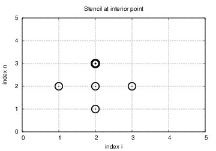

Note: VERY PRELIMINARY VERSION! (Expect lots of typos!)
Finite difference methods for waves on a string
A finite difference method
Step 1: Discretizing the Domain
Step 2: Fulfilling the equation at the mesh points
Step 3: Replacing derivatives by finite differences
Step 4: Formulating a Recursive Algorithm
Sketch of an implementation
Generalization: including a source term
The extended problem
Discretization
Constructing an exact solution of the discrete equations
Implementation
Making a solver function
Verification: exact quadratic solution
Visualization: animating \( u(x,t) \)
Visualization via SciTools
Making movie files
Skipping frames for animation speed
Visualization via Matplotlib
Running a case
The benefits of scaling
Vectorization
Operations on slices of arrays
Finite difference schemes expressed as slices
Verification
Efficiency measurements
Exercises
Exercise 1: Add storage of solution in a user action function
Exercise 2: Use a class for the user action function
Exercise 3: Compare several Courant numbers in one movie
Generalization: reflecting boundaries
Neumann boundary condition
Discretization of derivatives at the boundary
Implementation of Neumann conditions
Alternative implementation via ghost cells
Idea
Implementation
Generalization: variable wave velocity
The model PDE with a variable coefficient
Discretizing the variable coefficient
Computing the coefficient between mesh points
How a variable coefficient affects the stability
Implementation of variable coefficients
A more general model PDE with variable coefficients
Generalization: including damping
Building a general 1D wave equation solver
User action function as a class
Collection of initial conditions
Calling functions from the command line
Exercises
Exercise 4: Use ghost cells to implement Neumann conditions
Exercise 5: Find a symmetry boundary condition
Exercise 6: Prove symmetry of a 1D wave problem computationally
Exercise 7: Prove symmetry of a 1D wave problem analytically
Exercise 8: Send pulse waves through a layered medium
Exercise 9: Explain why numerical noise occurs
Exercise 10: Investigate harmonic averaging in a 1D model
Finite difference methods for 2D and 3D wave equations
Multi-dimensional wave equations
Mesh
Discretization
Discretizing the PDEs
Handling boundary conditions where is \( u \) known
Discretizing the \( \partial u/\partial n = 0 \)
Implementation
Scalar computations
Domain and mesh
Stability limit
Solution arrays
Computing the solution
Vectorized computations
Verification
Testing a quadratic solution
Migrating loops to Cython
Declaring variables and annotating the code
Visual inspection of the C translation
Building the extension module
Calling the Cython function
Efficiency
Migrating loops to Fortran
The Fortran subroutine
Building the Fortran module with f2py
Examining doc strings
How to avoid array copying
Efficiency
Migrating loops to C via Cython
Translating index pairs to single indices
The complete C code
The Cython interface file
Building the extension module
Efficiency
Migrating loops to C via f2py
Migrating loops to C via Instant
Migrating loops to C++ via f2py
Using classes to implement a simulator
Callbacks to Python from Fortran or C
Analysis of the continuous and discrete solutions
Properties of the solution of the wave equation
Analysis of the finite difference scheme
Extending the analysis to 2D and 3D
Applications of wave equations
Waves on a string
External forcing
Modeling the tension via springs
Waves on a membrane
Elastic waves in a rod
The acoustic model for seismic waves
Anisotropy
Sound waves in liquids and gases
Spherical waves
The linear shallow water equations
Wind drag on the surface
Bottom drag
Effect of the Earth's rotation
Waves in blood vessels
Reduction to standard wave equation
Electromagnetic waves
Exercises
Exercise 11: Simulate elastic waves in a rod
Exercise 12: Test the efficiency of compiled loops in 3D
Exercise 13: Earthquake-generated tsunami in a 1D model
Exercise 14: Implement an open boundary condition
Exercise 15: Earthquake-generated tsunami over a subsea hill
Exercise 16: Implement Neumann conditions in 2D
Exercise 17: Implement a convergence test for a 2D code
Exercise 18: Earthquake-generated tsunami over a 3D hill
Exercise 19: Implement loops in compiled languages
Exercise 20: Write a complete program in Fortran or C
Exercise 21: Investigate Matplotlib for visualization
Exercise 22: Investigate Mayavi for visualization
Exercise 23: Investigate Paraview for visualization
Exercise 24: Investigate OpenDX for visualization
Exercise 25: Investigate harmonic vs arithmetic mean
Exercise 26: Simulate seismic waves in 2D
A very wide range of physical processes lead to wave motion, where signals are propagated through a medium in space and time, normally with little or no permanent movement of the medium itself. The shape of the signals may undergo changes as they travel through matter, but usually not so much that the signals cannot be recognized at some later point in space and time. Many types of wave motion can be described by the wave equation \( u_{tt}=\nabla\cdot (c^2\nabla u) + f \), which we will solve in the forthcoming text by finite difference methods.
We begin our study of wave equations by simulating one-dimensional waves on a string, say on a guitar or violin string. Let the string in the deformed state coincide with the interval \( [0,L] \) on the \( x \) axis, and let \( u(x,t) \) be the displacement at time \( t \) in the \( y \) direction of a point initially at \( x \). The displacement function \( u \) is governed by the mathematical model
$$ \begin{align} \frac{\partial^2 u}{\partial t^2} &= c^2 \frac{\partial^2 u}{\partial x^2}, \quad x\in (0,L),\ t\in (0,T] \label{wave:pde1}\\ u(x,0) &= I(x), \quad x\in [0,L] \label{wave:pde1:ic:u}\\ \frac{\partial}{\partial t}u(x,0) &= 0, \quad x\in [0,L] \label{wave:pde1:ic:ut}\\ u(0,t) & = 0, \quad t\in (0,T], \label{wave:pde1:bc:0}\\ u(L,t) & = 0, \quad t\in (0,T] \thinspace . \label{wave:pde1:bc:L} \end{align} $$ The constant \( c \) and the function \( I(x) \) must be prescribed.
Equation \eqref{wave:pde1} is known as the one-dimensional wave equation. Since this PDE contains a second-order derivative in time, we need two initial conditions, here \eqref{wave:pde1:ic:u} specifying the initial shape of the string, \( I(x) \), and \eqref{wave:pde1:ic:ut} reflecting that the initial velocity of the string is zero. In addition, PDEs need boundary conditions, here \eqref{wave:pde1:bc:0} and \eqref{wave:pde1:bc:L}, specifying that the string is fixed at the ends, i.e., that the displacement \( u \) is zero at the ends.
Sometimes we will use a more compact notation for the partial derivatives to save space:
$$ \begin{equation} u_t = \frac{\partial u}{\partial t}, u_{tt} = \frac{\partial^2 u}{\partial t^2}, \end{equation} $$ and similar for derivatives with respect to other variables. Then the wave equation can be written compactly as \( u_{tt} = c^2u_{xx} \).
The PDE problem \eqref{wave:pde1}-\eqref{wave:pde1:bc:L} will now be discretized in space and time by a finite difference method.
The temporal domain \( [0,T] \) is represented by a finite number of mesh points
$$ \begin{equation} t_0=0 < t_1 < t_2 < \cdots < t_{N-1} < t_N = T \thinspace . \end{equation} $$ Similarly, the spatial domain \( [0,L] \) is replaced by a set of mesh points
$$ \begin{equation} 0 = x_0 < x_1 < x_2 < \cdots < x_{N_x-1} < x_{N_x} = L \thinspace . \end{equation} $$ One may view the mesh as two-dimensional in the \( x,t \) plane, consisting of points \( (x_i, t_n) \), \( i=0,\ldots,N_x \), \( n=0,\ldots,N \).
For uniformly distributed mesh points we can introduce the constant mesh spacings \( \Delta t \) and \( \Delta x \). We have that
$$ \begin{equation} x_i = i\Delta x,\quad i=0,\ldots,N_x, \end{equation} $$ and
$$ \begin{equation} t_i = n\Delta t,\quad n=0,\ldots,N \thinspace . \end{equation} $$ We also have that \( \Delta x = x_i-x_{i-1} \), \( i=1,\ldots,N_x \), and \( \Delta t = t_n - t_{n-1} \), \( n=1,\ldots,N \). Figure 1 displays a mesh in the \( x \)-$t$ plane with \( N=5 \), \( N_x=5 \), and constant mesh spacings.

The solution \( u(x,t) \) is sought at the mesh points: \( u(x_i,t_n) \) for \( i=0,\ldots,N_x \) and \( n=0,\ldots,N \). The numerical approximation at mesh point \( (x_i,t_n) \) is denoted by \( u^n_i \). The circles in Figure 1 illustrates neighboring mesh points where values of \( u^n_i \) are connected through a discrete equation. In this particular case, \( u_2^1 \), \( u_1^2 \), \( u_2^2 \), \( u_3^2 \), and \( u_2^3 \) are connected in a discrete equation associated with the center point \( (2,2) \). The term stencil is often used about the discrete equation at a mesh point, and the geometry of a typical stencil is illustrated in Figure 1.
For a numerical solution by the finite difference method, we relax the condition that \eqref{wave:pde1} holds at all points in the domain \( (0,L)\times (0,T] \) to the requirement that the PDE is fulfilled at the mesh points:
$$ \begin{equation} \frac{\partial^2}{\partial t^2} u(x_i, t_n) = c^2\frac{\partial^2}{\partial x^2} u(x_i, t_n), \label{wave:pde1:step2} \end{equation} $$ for \( i=1,\ldots,N_x-1 \) and \( n=1,\ldots,N \). For \( n=0 \) we have the initial conditions \( u=I(x) \) and \( u_t=0 \), and at the boundaries \( i=0,N_x \) we have the boundary condition \( u=0 \).
The second-order derivatives can be replaced by central differences. The most widely used difference approximation of the second-order derivative is
$$ \frac{\partial^2}{\partial t^2}u(x_i,t_n)\approx \frac{u_i^{n+1} - 2u_i^n + u^{n-1}_i}{\Delta t^2} = [D_tD_t u]^n_i,$$ and a similar definition of the second-order derivative in \( x \) direction:
$$ \frac{\partial^2}{\partial x^2}u(x_i,t_n)\approx \frac{u_{i+1}^{n} - 2u_i^n + u^{n}_{i-1}}{\Delta x^2} = [D_xD_x u]^n_i \thinspace . $$ We can now replace the derivatives in \eqref{wave:pde1:step2} and get
$$ \begin{equation} \frac{u_i^{n+1} - 2u_i^n + u^{n-1}_i}{\Delta t^2} = c^2\frac{u_{i+1}^{n} - 2u_i^n + u^{n}_{i-1}}{\Delta x^2}, \label{wave:pde1:step3b} \end{equation} $$ or written more compactly using the operator notation:
$$ \begin{equation} [D_tD_t u = c^2 D_xD_x]^{n}_i \thinspace . \label{wave:pde1:step3a} \end{equation} $$
We also need to replace the derivative in the initial condition \eqref{wave:pde1:ic:ut} by a finite difference approximation. A centered difference of the type $$ \frac{\partial}{\partial t} u(x_i,t_n)\approx \frac{u^1_i - u^{-1}_i}{2\Delta t} = [D_{2t} u]^0_i, $$ seems appropriate. In operator notation the initial condition is written as $$ [D_{2t} u]^0_i = 0 \thinspace . $$ Writing out this equation and ordering the terms give $$ \begin{equation} u^{-1}_i=u^1_i,\quad i=0,\ldots,N_x\thinspace . \label{wave:pde1:step3c} \end{equation} $$
As for ordinary differential equations, we assume that \( u^n_i \) and \( u^{n-1}_i \) are already computed for \( i=0,\ldots,N_x \). The only unknown quantity in \eqref{wave:pde1:step3b} is therefore \( u^{n+1}_i \), which we can solve for:
$$ \begin{equation} u^{n+1}_i = -u^{n-1}_i + 2u^n_i + C^2 \left(u^{n}_{i+1}-2u^{n}_{i} + u^{n}_{i-1}\right), \label{wave:pde1:step4} \end{equation} $$ where we have introduced the parameter $$ \begin{equation} C = c\frac{\Delta t}{\Delta x}, \end{equation} $$ known as the (dimensionless) Courant number. We see that the discrete version of the PDE features only one parameter, \( C \), which is therefore the key parameter that governs the quality of the numerical solution. Both the primary physical parameter \( c \) and the numerical parameters \( \Delta x \) and \( \Delta t \) are lumped together in \( C \).
Given that \( u^{n-1}_i \) and \( u^n_i \) are computed for \( i=0,\ldots,N_x \), we find new values at the next time level by applying the formula \eqref{wave:pde1:step4} for \( i=1,\ldots,N_x-1 \). Figure 1 illustrates the points that are used to compute \( u^3_2 \). For the boundary points, \( i=0 \) and \( i=N_x \), we apply the boundary conditions: \( u_0^{n+1}=0 \) and \( u_{N_x}^{n+1}=0 \).
A problem with \eqref{wave:pde1:step4} arises when \( n=0 \) since the formula for \( u^1_i \) involves \( u^{-1}_i \), which is an undefined quantity outside the time mesh and the time domain. However, we can use the boundary condition \eqref{wave:pde1:step3c} in combination with \eqref{wave:pde1:step4} when \( n=0 \) to arrive at a special formula for \( u_i^1 \):
$$ \begin{equation} u_i^1 = u^0_i - \half C^2\left(u^{n}_{i+1}-2u^{n}_{i} + u^{n}_{i-1}\right) \thinspace . \label{wave:pde1:step4:1} \end{equation} $$ Figure 2 illustrates how \eqref{wave:pde1:step4:1} connects four instead of five points: \( u^1_2 \), \( u_1^0 \), \( u_2^0 \), and \( u_3^0 \).
We can now summarize the computational algorithm:
In a Python implementation of this algorithm, we use the array elements u[i] to store \( u^{n+1}_i \), u_1[i] to store \( u^n_i \), and u_2[i] to store \( u^{n-1}_i \). The algorithm only needs to access the three most recent time levels, so we need only three arrays for \( u_i^{n+1} \), \( u_i^n \), and \( u_i^{n-1} \), \( i=0,\ldots,N_x \). Storing all the solutions in a two-dimensional array of size \( (N_x+1)\times (N+1) \) would be possible in this simple one-dimensional PDE problem, but is normally out of the question in three-dimensional (3D) and large two-dimensional (2D) problems. We shall therefore in all our programs for solving PDEs have the unknown in memory at as few time levels as possible.
The following Python snippet realizes the steps in the computational algorithm.
# Given mesh points as arrays x and t (x[i], t[n])
dx = x[1] - x[0]; dt = t[1] - t[0]
C = c*dt/dx
N = len(t)-1
C2 = C**2 # help variable in the scheme
# Set initial condition u(x,0) = I(x)
for i in range(0, Nx+1):
u_1[i] = I(x[i])
# Apply special formula for first step, incorporating du/dt=0
for i in range(1, Nx):
u[i] = u_1[i] - 0.5*C**2(u_1[i+1] - 2*u_1[i] + u_1[i-1])
u[0] = 0; u[Nx] = 0
u_2[:], u_1[:] = u_1, u
for n in range(1, N):
# Update all inner mesh points at time t[n+1]
for i in range(1, Nx):
u[i] = 2u_1[i] - u_2[i] - \
C**2(u_1[i+1] - 2*u_1[i] + u_1[i-1])
# Insert boundary conditions
u[0] = 0; u[Nx] = 0
# Switch variables before next step
u_2[:], u_1[:] = u_1, u
Before implementing the algorithm, it is convenient to add a source term to the PDE \eqref{wave:pde1} since it gives us more freedom in finding test problems for verification. In particular, the source term allows us to use manufactured solutions for software testing, where we simply choose some function as solution, fit the corresponding source term, and define consistent boundary and initial conditions. Such solutions will seldom fulfill the initial condition \eqref{wave:pde1:ic:ut} so we need to generalize this condition to \( u_t=V(x) \).
We now address the following extended initial-boundary value problem for one-dimensional wave phenomena:
$$ \begin{align} u_{tt} &= c^2 u_{xx} + f(x,t), \quad x\in (0,L),\ t\in (0,T] \label{wave:pde2}\\ u(x,0) &= I(x), \quad x\in [0,L] \label{wave:pde2:ic:u}\\ u_t(x,0) &= V(x), \quad x\in [0,L] \label{wave:pde2:ic:ut}\\ u(0,t) & = 0, \quad t>0, \label{wave:pde2:bc:0}\\ u(L,t) & = 0, \quad t>0 \thinspace . \label{wave:pde2:bc:L} \end{align} $$
Sampling the PDE at \( (x_i,t_n) \) and using the same finite difference approximations as above, yields
$$ \begin{equation} [D_tD_t u = c^2 D_xD_x + f]^{n}_i \thinspace . \label{wave:pde2:fdop} \end{equation} $$ Writing this out and solving for the unknown \( u^{n+1}_i \) results in
$$ \begin{equation} u^{n+1}_i = -u^{n-1}_i + 2u^n_i + C^2 (u^{n}_{i+1}-2u^{n}_{i} + u^{n}_{i-1}) + \Delta t^2 f^n_i \label{wave:pde2:step3b} \thinspace . \end{equation} $$
The equation for the first time step must be rederived. The discretization of the initial condition \( u_t = V(x) \) at \( t=0 \) becomes
$$ [D_{2t}u = V]^0_i\quad\Rightarrow u^{-1}_i = u^{1}_i - 2\Delta t V_i,$$ which, when inserted in \eqref{wave:pde2:step3b} for \( n=0 \), gives
$$ \begin{equation} u^{1}_i = u^0_i - \Delta t V_i + \frac{1}{2} C^2 \left(u^{n}_{i+1}-2u^{n}_{i} + u^{n}_{i-1}\right) + \frac{1}{2}\Delta t^2 f^n_i \label{wave:pde2:step3c} \thinspace . \end{equation} $$
For verification purposes we shall use a solution that is quadratic in space and linear in time. More specifically, we choose $$ \uex (x,t) = x(L-x)(1+\frac{1}{2}t), $$ which by insertion in the PDE leads to \( f(x,t)=2(1+t)c^2 \). Moreover, this \( u \) fulfills the boundary conditions and is compatible with \( I(x)=x(L-x) \) and \( V(x)=\frac{1}{2}x(L-x) \).
To see if the discrete values \( \uex(x_i,t_n) \) fulfills the discrete equation as well, we first establish the results $$ \begin{align} \lbrack D_tD_t t^2\rbrack^n &= \frac{t_{n+1}^2 - 2t_n^2 + t_{n-1}^2}{\Delta t^2} = (n+1)^2 -n^2 + (n-1)^2 = 2,\\ \lbrack D_tD_t t\rbrack^n &= \frac{t_{n+1} - 2t_n + t_{n-1}}{\Delta t^2} = \frac{((n+1) -n + (n-1))\Delta t}{\Delta t^2} = 0 \thinspace . \end{align} $$ Hence, $$ [D_tD_t \uex]^n_i = x_i(L-x_i)[D_tD_t (1+\frac{1}{2}t)]^n = x_i(L-x_i)\frac{1}{2}[D_tD_t t]^n = 0,$$ and $$ \begin{align*} \lbrack D_xD_x \uex\rbrack^n_i &= (1+\frac{1}{2}t_n)\lbrack D_xD_x (xL-x^2)\rbrack_i = (1+\frac{1}{2}t_n)\lbrack LD_xD_x x - D_xD_x x^2\rbrack_i \\ &= -2(1+\frac{1}{2}t_n) \thinspace . \end{align*} $$ Since \( f^n_i = 2(1+\frac{1}{2}t_n)c^2 \), we see that the scheme accepts \( \uex \) as a solution. Moreover, \( \uex(x_i,0)=I(x_i) \), \( \partial \uex/\partial t = V(x_i) \) at \( t=0 \), and \( \uex(x_0,t)=\uex(x_{N_x},0)=0 \). Also the modified scheme for the first time step is fulfilled by \( \uex(x_i,t_n) \). Therefore, the exact solution \( \uex(x,t) \) of the PDE problem is also an exact solution of the discrete problem. We can use this result to check that the computed \( u^n_i \) vales from an implementation equals \( \uex(x_i,t_n) \) within machine precision, regardless of the mesh spacings \( \Delta x \) and \( \Delta t \)! Nevertheless, there might be stability restrictions on \( \Delta x \) and \( \Delta t \), so the test can only be run for a mesh that is compatible with the stability criterion (which is \( C\leq 1 \), to be derived later).
A product of quadratic or linear expressions in the various independent variables, as shown above, will often fulfill both the continuous and discrete PDE problem and can therefore be very useful solutions for verifying implementations. However, for 1D wave equations of the type \( u_t=c^2u_{xx} \) we shall see that there is always another much more powerful way of generating exact solutions (just set \( C=1 \)).
A real implementation of the basic computational algorithm can be encapsulated in a function, taking all the input data for the problem as arguments. The physical input data consists of \( c \), \( I(x) \), \( V(x) \), \( f(x,t) \), \( L \), and \( T \). The numerical input is the mesh parameters \( \Delta t \) and \( \Delta x \). One possibility is to specify \( N_x \) and the Courant number \( C=c\Delta t/\Delta x \). The latter is convenient to prescribe instead of \( \Delta t \) when performing numerical investigations, because the numerical accuracy depends directly on \( C \).
The solution at all spatial points at a new time level is stored in an array u (of length \( N_x+1 \)). We need to decide what do to with this solution, e.g., visualize the curve, analyze the values, or write the array to file for later use. The decision what to do is left to the user in a suppled function
def user_action(u, x, t, n)
where u is the solution at the spatial points x at time t[n].
A first attempt at a solver function is listed below.
from numpy import *
def solver(I, V, f, c, L, Nx, C, T, user_action=None):
"""Solve u_tt=c^2*u_xx + f on (0,L)x(0,T]."""
x = linspace(0, L, Nx+1) # mesh points in space
dx = x[1] - x[0]
dt = C*dx/c
N = int(round(T/dt))
t = linspace(0, N*dt, N+1) # mesh points in time
C2 = C**2 # help variable in the scheme
if f is None or f == 0 :
f = lambda x, t: 0
if V is None or V == 0:
V = lambda x: 0
u = zeros(Nx+1) # solution array at new time level
u_1 = zeros(Nx+1) # solution at 1 time level back
u_2 = zeros(Nx+1) # solution at 2 time levels back
import time; t0 = time.clock() # for measuring CPU time
# Load initial condition into u_1
for i in range(0,Nx+1):
u_1[i] = I(x[i])
if user_action is not None:
user_action(u_1, x, t, 0)
# Special formula for first time step
n = 0
for i in range(1, Nx):
u[i] = u_1[i] + dt*V(x[i]) + \
0.5*C2*(u_1[i-1] - 2*u_1[i] + u_1[i+1]) + \
0.5*dt**2*f(x[i], t[n])
u[0] = 0; u[Nx] = 0
if user_action is not None:
user_action(u, x, t, 1)
u_2[:], u_1[:] = u_1, u
for n in range(1, N):
# Update all inner points at time t[n+1]
for i in range(1, Nx):
u[i] = - u_2[i] + 2*u_1[i] + \
C2*(u_1[i-1] - 2*u_1[i] + u_1[i+1]) + \
dt**2*f(x[i], t[n])
# Insert boundary conditions
u[0] = 0; u[Nx] = 0
if user_action is not None:
if user_action(u, x, t, n+1):
break
# Switch variables before next step
u_2[:], u_1[:] = u_1, u
cpu_time = t0 - time.clock()
return u, x, t, cpu_time
We use the test problem derived in the section Generalization: including a source term for verification. Here is a function realizing this verification as a nose test:
import nose.tools as nt
def test_quadratic():
"""Check that u(x,t)=x(L-x)(1+t) is exactly reproduced."""
def exact_solution(x, t):
return x*(L-x)*(1 + 0.5*t)
def I(x):
return exact_solution(x, 0)
def V(x):
return 0.5*exact_solution(x, 0)
def f(x, t):
return 2*(1 + 0.5*t)*c**2
L = 2.5
c = 1.5
Nx = 3 # very coarse mesh
C = 0.75
T = 18
u, x, t, cpu = solver(I, V, f, c, L, Nx, C, T)
u_e = exact_solution(x, t[-1])
diff = abs(u - u_e).max()
nt.assert_almost_equal(diff, 0, places=14)
Now that we have verified the implementation it is time to do a real computation where we also display the evolution of the waves on the screen.
The following viz function defines a user_action callback function for plotting the solution at each time level:
def viz(I, V, f, c, L, Nx, C, T, umin, umax, animate=True):
"""Run solver and visualize u at each time level."""
import scitools.std as st, time, glob, os
def plot_u(u, x, t, n):
"""user_action function for solver."""
st.plot(x, u, 'r-',
xlabel='x', ylabel='u',
axis=[0, L, umin, umax],
title='t=%f' % t[n], show=True)
# Let the initial condition stay on the screen for 2
# seconds, else insert a pause of 0.2 s between each plot
time.sleep(2) if t[n] == 0 else time.sleep(0.2)
st.savefig('frame_%04d.png' % n) # for movie making
# Clean up old movie frames
for filename in glob.glob('frame_*.png'):
os.remove(filename)
user_action = plot_u if animate else None
u, x, t, cpu = solver(I, V, f, c, L, Nx, C, T, user_action)
# Make movie files
st.movie('frame_*.png', encoder='mencoder', fps=4,
output_file='movie.avi')
st.movie('frame_*.png', encoder='html', fps=4,
output_file='movie.html')
A function inside another function, like plot_u in the above code segment, has access to and remembers (!) all the local variables in the surrounding code inside the viz function. This is known in computer science as a closure and is convenient. For example, the st and time modules defined outside plot_u are accessible for plot_u the function is called (as user_action) in the solver function. Some think, however, that a class instead of a closure is a cleaner and easier-to-understand implementation of the user action function, see the section Building a general 1D wave equation solver.
Two hardcopies of the animation are made from the frame_*.png files, using movie function from SciTools at the end of the viz function. The AVI file movie1.avi can be played in a standard movie player. The HTML file movie.html is essentially a movie player that can be loaded into a browser to display the individual frame_*.png files. Note that padding the frame counter in the frame_*.png files (%04d format) is essential so that the wildcard notation frame_*.png expands to the correct set of files.
Rather than using the simple movie function, one can run native commands in the terminal window. An AVI movie can be made by mencoder:
Terminal> mencoder "mf://frame_%04d.png" -mf fps=4:type=png \
-ovc lavc -o movie.avi
Terminal> mplayer movie.avi
The HTML player can only be generated by
Terminal> scitools movie output_file=movie.html fps=4 frame_*.png
The fps parameter controls the number of frames per second, i.e., the speed of the movie.
Sometimes the time step is small and \( T \) is large, leading to an inconveniently large number of plot files and a slow animation on the screen. The solution to such a problem is to decide on a total number of frames in the animation, num_frames, and plot the solution only at every every frame. The total number of time levels (i.e., maximum possible number of frames) is the length of t, t.size, and if we want num_frames, we need to plot every t.size/num_frames frame:
every = int(t.size/float(num_frames))
if n % every == 0 or n == t.size-1:
st.plot(x, u, 'r-', ...)
The initial condition (n=0) is natural to include, and as n % every == 0 will very seldom be true for the very final frame, we also add that frame (n == t.size-1).
A simple choice of numbers may illustrate the formulas: say we have 801 frames in total (t.size) and we allow only 60 frames to be plotted. Then we need to plot every 801/60 frame, which with integer division yields 13 as every. Using the mod function, n % every, this operation is zero every time n can be divided by 13 without a remainder. That is, the if test is true when n equals \( 0, 13, 26, 39, ..., 780, 801 \). The associated code is included in the plot_u function in the file wave1D_u0_sv.py.
The previous code based on the plot interface from scitools.std can be run with Matplotlib as the visualization backend, but if one desires to program directly with Matplotlib, quite different code is needed. Matplotlib's interactive mode must be turned on:
import matplotlib.pyplot as plt
plt.ion() # interactive mode on
The most commonly used animation technique with Matplotlib is to update the data in the plot at each time level:
# Make a first plot
lines = plt.plot(t, u)
# call plt.axis, plt.xlabel, plt.ylabel, etc. as desired
# At later time levels
lines[0].set_ydata(u)
plt.legend('t=%g' % t[n])
plt.draw() # make updated plot
plt.savefig(...)
An alternative is to rebuild the plot at every time level:
plt.clf() # delete any previous curve(s)
plt.axis([...])
plt.plot(t, u)
# plt.xlabel, plt.legend and other decorations
plt.draw()
plt.savefig(...)
Many prefer to work with figure and axis objects as in MATLAB:
fig = plt.figure()
...
fig.clf()
ax = fig.gca()
ax.axis(...)
ax.plot(t, u)
# ax.set_xlabel, ax.legend and other decorations
plt.draw()
fig.savefig(...)
The first demo of our 1D wave equation solver concerns vibrations of a string that is initially deformed to a triangular shape, like when picking a guitar string:
$$ \begin{equation} I(x) = \left\lbrace \begin{array}{ll} ax/x_0, & x < x_0,\\ a(L-x)/(L-x_0), & \hbox{otherwise} \end{array}\right. \label{wave:pde1:guitar:I} \end{equation} $$ We choose \( L=40 \) cm, \( x_0=0.8L \), \( a=5 \) mm, \( N_x=50 \), and a time frequency \( \nu = 440 \) Hz. The relation between the wave speed \( c \) and \( \nu \) is \( c=\nu\lambda \), where \( \lambda \) is the wavelength, taken as \( 2L \) because the longest wave on the string form half a wavelength. There is no external force, so \( f=0 \), and the string is at rest initially so that \( V=0 \). A function setting these physical parameters and calling viz for this case goes as follows:
def guitar(C):
"""Triangular wave (pulled guitar string)."""
L = 0.4
x0 = 0.8*L
a = 0.005
freq = 440
wavelength = 2*L
c = freq*wavelength
omega = 2*pi*freq
num_periods = 1
T = 2*pi/omega*num_periods
Nx = 50
def I(x):
return a*x/x0 if x < x0 else a/(L-x0)*(L-x)
umin = -1.2*a; umax = -umin
cpu = viz(I, 0, 0, c, L, Nx, C, T, umin, umax, animate=True)
The associated program has the name wave1D_u0_s.py. Run the program and watch the movie of the vibrating string.
The previous example demonstrated that quite some work is needed with establishing relevant physical parameters for a case. By scaling the mathematical problem we can often reduce the need to estimate physical parameters dramatically. A scaling consists of introducing new independent and dependent variables, with the aim that the absolute value of these vary between 0 and 1: $$ \bar x = \frac{x}{L},\quad \bar t = \frac{L}{c}t,\quad \bar u = \frac{u}{a} \thinspace . $$ Replacing old by new variables in the PDE, using \( f=0 \), and dropping the bars, results in \( u_{tt} = u_{xx} \). That is, the original equation with \( c=1 \). The initial condition corresponds to \eqref{wave:pde1:guitar:I} with \( a=1 \), \( L=1 \), and \( x_0\in [0,1] \). This means that we only need to decide on \( x_0 \), because the scaled problem corresponds to setting all other parameters to unity! In the code we can just set a=c=L=1, x0=0.8, and there is no need to calculate with wavelengths and frequencies to estimate \( c \).
The only non-trivial parameter to estimate is \( T \) and how it relates to periods in periodic solutions. If \( u\sim \sin (\omega t) = \sin (\omega \bar t L/c) \) in time, \( \omega = 2\pi c/\lambda \), where \( \lambda =2L \) is the wavelength. One period \( T \) in dimensionless time means \( \omega T L/c = 2\pi \), which gives \( T=2 \).
The computational algorithm for solving the wave equation visits one mesh point at a time and evaluates a formula for the new value at that point. Technically, this is implemented by a loop over array elements in a program. Such loops may run slowly in Python (and similar interpreted languages such as R and MATLAB). One technique for speeding up loops is to perform operations on entire arrays instead of working with one element at a time. This is referred to as vectorization, vector computing, or array computing. Operations on whole arrays are possible if the computations involving each element is independent of each other and therefore can, at least in principle, be performed simultaneously. Vectorization not only speeds up the code on serial computers, but it also makes it easy to exploit parallel computing.
Efficient computing with numpy arrays demands that we avoid loops and compute with entire arrays at once, or at least large portions of them. Consider this calculation of differences:
n = u.size
for i in range(0, n-1):
d[i] = u[i+1] - u[i]
All the differences here are independent of each other. The computation of d can therefore alternatively be done by subtracting the array \( (u_0,u_1,\ldots,u_{n-1}) \) from the array where the elements are shifted one index upwards: \( (u_1,u_2,\ldots,u_n) \), see Figure 3. The former subset of the array can be expressed by u[0:n-1], u[0:-1], or just u[:-1], meaning from index 0 up to, but not including, the last element (-1). The latter subset is obtained by u[1:n] or u[1:], meaning from index 1 and the rest of the array. The computation of d can now be done without an explicit Python loop:
d = u[1:] - u[:-1]
or with explicit limits if desired:
d = u[1:n] - u[0:n-1]
Indices with a colon, going from an index to (but not including) another index are called slices. With numpy arrays, the computations are still done by loops, but in efficient, compiled, highly optimized code in C or Fortran. Such array operations can also easily be distributed among many processors on parallel computers. We say that the scalar code above, working on an element (a scalar) at a time, has been replaced by an equivalent vectorized code. The process of vectorizing code is called vectorization.
Figure 3: Illustration of subtracting two (displaced) slices of two arrays.

Newcomers to vectorization are encouraged to choose a small array u, say with five elements, and simulate with pen and paper both the loop version and the vectorized version.
Finite difference schemes basically contains differences between array elements with shifted indices. Consider the updating formula
for i in range(1, n-1):
u2[i] = u[i-1] - 2*u[i] + u[i+1]
The vectorization consists of replacing the loop by arithmetics on slices of arrays of length n-2:
u2 = u[:-2] - 2*u[1:-1] + u[2:]
u2 = u[0:n-2] - 2*u[1:n-1] + u[2:n] # alternative
Note that u2 here gets length n-2. If u2 is already an array of length n and we want to use the formula to update all the "inner" elements of u2, as we will when solving a 1D wave equation, we can write
u2[1:-1] = u[:-2] - 2*u[1:-1] + u[2:]
u2[1:n-1] = u[0:n-2] - 2*u[1:n-1] + u[2:n] # alternative
Pen and paper calculations with a small array will demonstrate what is actually going on. The expression on the right-hand side are done in the following steps, involving temporary arrays with intermediate results, since we can only work with two arrays at a time in arithmetic expressions:
temp1 = 2*u[1:-1]
temp2 = u[0:-2] - temp1
temp3 = temp2 + u[2:]
u2[1:-1] = temp3
We can extend the example to a formula with an additional term computed by calling a function:
def f(x):
return x**2 + 1
for i in range(1, n-1):
u2[i] = u[i-1] - 2*u[i] + u[i+1] + f(x[i])
Assuming u2, u, and x all have length n, the vectorized version becomes
u2[1:-1] = u[:-2] - 2*u[1:-1] + u[2:] + f(x[1:-1])
We now have the necessary tools to vectorize the algorithm for the wave equation. There are three loops: one for the initial condition, one for the first time step, and finally the loop that is repeated for all subsequent time levels. Since only the latter is repeated a potentially large number of times, we limit the efforts of vectorizing the code to this loop:
for i in range(1, Nx):
u[i] = 2*u_1[i] - u_2[i] + \
C2*(u_1[i-1] - 2*u_1[i] + u_1[i+1])
The vectorized version becomes
u[1:-1] = - u_2[1:-1] + 2*u_1[1:-1] + \
C2*(u_1[:-2] - 2*u_1[1:-1] + u_1[2:])
or
u[1:Nx] = 2*u_1[1:Nx]- u_2[1:Nx] + \
C2*(u_1[0:Nx-1] - 2*u_1[1:Nx] + u_1[2:Nx+1])
The program wave1D_u0_sv.py contains a new version of the function solver where both the scalar and the vectorized loops are included.
We may reuse the quadratic solution \( \uex(x,t)=x(L-x)(1+\frac{1}{2}t) \) for verifying also the vectorized code. A nose test can now test both the scalar and the vectorized version. Moreover, we may use a user_action function that compares the computed and exact solution at each time level and performs an assert:
def test_quadratic():
"""
Check the scalar and vectorized versions work for
a quadratic u(x,t)=x(L-x)(1+t) that is exactly reproduced.
"""
exact_solution = lambda x, t: x*(L - x)*(1 + 0.5*t)
I = lambda x: exact_solution(x, 0)
V = lambda x: 0.5*exact_solution(x, 0)
f = lambda x, t: 2*c**2*(1 + 0.5*t)
L = 2.5
c = 1.5
Nx = 3 # very coarse mesh
C = 1
T = 18 # long time integration
def assert_no_error(u, x, t, n):
u_e = exact_solution(x, t[n])
diff = abs(u - u_e).max()
print diff
nt.assert_almost_equal(diff, 0, places=13)
solver(I, V, f, c, L, Nx, C, T,
user_action=assert_no_error, version='scalar')
solver(I, V, f, c, L, Nx, C, T,
user_action=assert_no_error, version='vectorized')
Here, we also used the opportunity to demonstrate how to achieve very compact code with the use of lambda functions for the various input parameters that require a Python function.
Running the wave1D_u0_sv.py code with the previous string vibration example for \( N_x=50,100,200,400,800 \) and measuring the CPU time (see the run_efficiency_experiments function), shows that the speed-up of vectorization goes approximately like \( 5/N_x \), which is a substantial effect!
Extend the plot_u function in the file wave1D_u0_s.py to also store the solutions u in a list. To this end, declare all_u as an empty list in the viz function, outside plot_u, and perform an append operation inside the plot_u function. Note that a function, like plot_u, inside another function, like viz, remembers all local variables in viz function, including all_u, even when plot_u is called (user_action) in the solver function. Test both all_u.append(u) and all_u.append(u.copy()). Why does one of these constructions fail to store the solution correctly? Let the viz function return the all_u list converted to a two-dimensional numpy array. Filename: wave1D_u0_s2.py.
Redo Exercise 1: Add storage of solution in a user action function using a class for the user action function. That is, define a class Action where the all_u list is an attribute, and implement the user action function as a method (the special method __call__ is a natural choice). The class versions avoids that the user action function depends on parameters defined outside the function (such as all_u in Exercise 1: Add storage of solution in a user action function). Filename: wave1D_u0_s2c.py.
Use the program from Exercise 1: Add storage of solution in a user action function or Exercise 2: Use a class for the user action function to compute the and store the solutions corresponding to different Courant numbers, say 1.0, 0.9, and 0.1. Make visualization where the three solutions are compared. That is, each frame in the animation shows three curves. The challenge in such a visualization is to ensure that the curves in one plot corresponds to the same time point. Use slicing of the array returned from the viz function to pick out the solution at the right time levels (provided that the Courant numbers are integer factors of the smallest Courant number such that the slicing works).
Now we shall generalize the boundary condition \( u=0 \) from the section Finite difference methods for waves on a string to the condition \( u_x=0 \), which is more complicated to express numerically and also implement.
When a wave hits a boundary and is to be reflected back, one applies the condition
$$ \begin{equation} \frac{\partial u}{\partial n} \equiv \normalvec\cdot\nabla u = 0 \label{wave:pde1:Neumann:0} \thinspace . \end{equation} $$ The derivative \( \partial /\partial n \) is in the outward normal direction from a general boundary. For a 1D domain \( [0,L] \), we have that \( \partial/\partial n = \partial /\partial x \) at \( x=L \) and \( \partial/\partial n-\partial /\partial x \) at \( x=0 \). Boundary conditions specifying the value of \( \partial u/\partial n \) are known as Neumann conditions, while Dirichlet conditions refer to specifications of \( u \).When the values are zero (\( \partial u/\partial n=0 \) or \( u=0 \)) we speak about homogeneous Neumann or Dirichlet conditions.
How can we incorporate the condition \eqref{wave:pde1:Neumann:0} in the finite difference scheme? Since we have used central differences in all the other approximations to derivatives in the scheme, it is tempting to implement \eqref{wave:pde1:Neumann:0} at \( x=0 \) and \( t=t_n \) by the difference
$$ \begin{equation} \frac{u_{-1}^n - u_1^n}{2\Delta x} = 0 \thinspace . \label{wave:pde1:Neumann:0:cd} \end{equation} $$ The problem is that \( u_{-1}^n \) is not a \( u \) value that is being computed since the point is outside the mesh. However, if we combine \eqref{wave:pde1:Neumann:0:cd} with the scheme for \( i=0 \),
$$ \begin{equation} u^{n+1}_i = -u^{n-1}_i + 2u^n_i + C^2 \left(u^{n}_{i+1}-2u^{n}_{i} + u^{n}_{i-1}\right), \label{wave:pde1:Neumann:0:scheme} \end{equation} $$ we can eliminate the fictitious value \( u_{-1}^n \). We see that \( u_{-1}^n=u_1^n \) from \eqref{wave:pde1:Neumann:0:cd}, which can be used in \eqref{wave:pde1:Neumann:0:scheme} to arrive at a modified scheme for the boundary point \( u_0^{n+1} \):
$$ \begin{equation} u^{n+1}_i = -u^{n-1}_i + 2u^n_i + 2C^2 \left(u^{n}_{i+1}-u^{n}_{i}\right),\quad i=0 \thinspace . \end{equation} $$ Figure 4 illustrates how this equation looks like for computing \( u^3_0 \) in terms of \( u^2_0 \), \( u^1_0 \), and \( u^2_1 \).
Figure 4: Modified stencil at a boundary with a Neumann condition.

Similarly, \eqref{wave:pde1:Neumann:0} applied at \( x=L \) is discretized by a central difference
$$ \begin{equation} \frac{u_{N_x+1}^n - u_{N_x-1}^n}{2\Delta x} = 0 \thinspace . \label{wave:pde1:Neumann:0:cd2} \end{equation} $$ Combined with the scheme for \( i=N_x \) we get a modified scheme for the boundary value \( u_{N_x}^{n+1} \):
$$ \begin{equation} u^{n+1}_i = -u^{n-1}_i + 2u^n_i + 2C^2 \left(u^{n}_{i-1}-u^{n}_{i}\right),\quad i=N_x \thinspace . \end{equation} $$
The modification of the scheme at the boundary is also required for the special formula for the first time step. How the stencil moves through the mesh and is modified at the boundary can be illustrated by an animation
The implementation of the special formulas for the boundary points can benefit from using the general formula for the interior points, but replacing \( u_{i-1}^n \) by \( u_{i+1}^n \) for \( i=0 \) and \( u_{i+1}^n \) by \( u_{i-1}^n \) for \( i=N_x \). This is achieved by just replacing the index \( i-1 \) by \( i+1 \) for \( i=0 \) and \( i+1 \) by \( i-1 \) for \( i=N_x \). In a program, we introduce variables to hold the value of the offset indices: im1 for i-1 and ip1 for i+1. It is now just a manner of defining im1 and ip1 properly for the internal points and the boundary points. The coding for the latter reads
i = 0
ip1 = i+1
im1 = ip1 # i-1 -> i+1
u[i] = u_1[i] + C2*(u_1[im1] - 2*u_1[i] + u_1[ip1])
i = Nx
im1 = i-1
ip1 = im1 # i+1 -> i-1
u[i] = u_1[i] + C2*(u_1[im1] - 2*u_1[i] + u_1[ip1])
We can in fact create one loop over both the internal and boundary points and use only one updating formula:
for i in range(0, Nx+1):
ip1 = i+1 if i < Nx else i-1
im1 = i-1 if i > 0 else i+1
u[i] = u_1[i] + C2*(u_1[im1] - 2*u_1[i] + u_1[ip1])
The program wave1D_dn.py solves the 1D wave equation \( u_{tt}=c^2u_{xx}+f(x,t) \) with general boundary and initial conditions:
Instead of modifying the scheme at the boundary, we can introduce extra points outside the mesh such that \( u_{-1}^n \) and \( u_{N_x+1}^n \) are defined. Adding the intervals \( [-\Delta x,0] \) and \( [L, L+\Delta x] \), often referred to as "ghost cells", to the mesh gives us all the needed mesh points \( i=-1,0,\ldots,N_x,N_x+1 \). If we ensure that we always have $$ u_{-1}^n = u_{1}^n\hbox{ and } u_{N_x-1}^n = u_{N_x+1}^n,$$ the application of the standard scheme at a boundary point \( i=0 \) or \( i=N_x \) will be correct and ensure the solution is compatible with the boundary condition.
We may keep x as the array for the physical mesh points, but just add extra elements to u,
u = zeros(Nx+3)
and similar for u_1 and u_2.
A major indexing problem arises as Python indices must start at 0 (u[-1] will always mean the last element in u). This implies that we in the mathematics should write the scheme as
$$ u^{n+1}_i = \cdots,\quad i=1,\ldots,N_x+1,$$ when \( i \) runs through all points in the physical mesh, and \( i=0 \) corresponds to the fictitious point \( x_{-1}=-\Delta x \). The old code for updating u at the inner mesh points must now be extended to cover all points:
for i in range(1, Nx+2):
u[i] = - u_2[i] + 2*u_1[i] + \
C2*(0.5*(q[i] + q[i+1])*(u_1[i+1] - u_1[i]) - \
0.5*(q[i] + q[i-1])*(u_1[i] - u_1[i-1])) + \
dt2*f(x[i], t[n])
Then the boundary points are updated, assuming the Neumann condition applies at both boundaries:
u[0] = u[2]
u[Nx+2] = u[Nx]
The ghost cell is only added to the boundary where we have a Neumann condition.
The solution returned to the user should preferably be an array with values corresponding to the physical mesh points in x, meaning that we return u[1:-1] (if there are two ghost cells).
Our next generalization of the 1D wave equation \eqref{wave:pde1} or \eqref{wave:pde2} is to allow for a variable wave velocity \( c \): \( c=c(x) \), usually motivated by wave motion in a domain composed of different physical media with different properties for propagating waves.
Instead of working with the squared quantity \( c^2(x) \) we shall for notational convenience introduce \( q(x) = c^2(x) \). A 1D wave equation with variable wave velocity often takes the form
$$ \begin{equation} \frac{\partial^2 u}{\partial t^2} = \frac{\partial}{\partial x}\left( q(x) \frac{\partial u}{\partial x}\right) + f(x,t) \label{wave:pde2:var:c:pde} \thinspace . \end{equation} $$ This equation sampled at a mesh point \( (x_i,t_n) \) reads $$ \frac{\partial^2 }{\partial t^2} u(x_i,t_n) = \frac{\partial}{\partial x}\left( q(x_i) \frac{\partial}{\partial x} u(x_i,t_n)\right) + f(x_i,t_n), $$ where the only new term is $$ \frac{\partial}{\partial x}\left( q(x_i) \frac{\partial}{\partial x} u(x_i,t_n)\right) = \left[ \frac{\partial}{\partial x}\left( q(x) \frac{\partial u}{\partial x}\right)\right]^n_i \thinspace . $$
The principal idea is to first discretize the outer derivative. Define $$ \phi = q(x) \frac{\partial u}{\partial x}, $$ and use a centered derivative around \( x=x_i \) for the derivative of \( \phi \): $$ \left[\frac{\partial\phi}{\partial x}\right]^n_i \approx \frac{\phi_{i+\frac{1}{2}} - \phi_{i-\frac{1}{2}}}{\Delta x} = [D_x\phi]^n_i \thinspace . $$ Then discretize $$ \phi_{i+\frac{1}{2}} = q_{i+\frac{1}{2}} \left[\frac{\partial u}{\partial x}\right]^n_{i+\frac{1}{2}} \approx q_{i+\frac{1}{2}} \frac{u^n_{i+1} - u^n_{i}}{\Delta x} = [q D_x u]_{i+\frac{1}{2}}^n \thinspace . $$ Similarly, $$ \phi_{i-\frac{1}{2}} = q_{i-\frac{1}{2}} \left[\frac{\partial u}{\partial x}\right]^n_{i-\frac{1}{2}} \approx q_{i-\frac{1}{2}} \frac{u^n_{i} - u^n_{i-1}}{\Delta x} = [q D_x u]_{i-\frac{1}{2}}^n \thinspace . $$ These intermediate results are now combined to $$ \begin{equation} \left[ \frac{\partial}{\partial x}\left( q(x) \frac{\partial u}{\partial x}\right)\right]^n_i \approx \frac{1}{\Delta x^2} \left( q_{i+\frac{1}{2}} \left({u^n_{i+1} - u^n_{i}}\right) - q_{i-\frac{1}{2}} \left({u^n_{i} - u^n_{i-1}}\right)\right) \label{wave:pde2:var:c:formula} \thinspace . \end{equation} $$ With operator notation we can write the discretization as $$ \begin{equation} \left[ \frac{\partial}{\partial x}\left( q(x) \frac{\partial u}{\partial x}\right)\right]^n_i \approx [D_xq D_x u]^n_i \label{wave:pde2:var:c:formula:op} \thinspace . \end{equation} $$
Remark. Many are tempted to use the chain rule on the term \( \frac{\partial}{\partial x}\left( q(x) \frac{\partial u}{\partial x}\right) \), but this is not a good idea when discretizing such a term.
If \( q \) is a known function of \( x \), we can easily evaluate \( q_{i+\frac{1}{2}} \) simply as \( q(x_{i+\frac{1}{2}}) \) with \( x_{i+\frac{1}{2}} = x_i + \frac{1}{2}\Delta x \). However, in many cases \( c \), and hence \( q \), is only known as a discrete function, often at the mesh points \( x_i \). Evaluating \( q \) between two mesh points \( x_i \) and \( x_{i+1} \) can be done by averaging in three ways: $$ \begin{align} q_{i+\frac{1}{2}} \approx \frac{1}{2}\left( q_{i} + q_{i+1}\right) = [\overline{q}^{x}]_i,\quad\hbox{(arithmetic mean)} \label{wave:pde2:var:c:mean:arithmetic}\\ q_{i+\frac{1}{2}} \approx 2\left( \frac{1}{q_{i}} + \frac{1}{q_{i+1}}\right)^{-1}, \quad\hbox{(harmonic mean)} \label{wave:pde2:var:c:mean:harmonic}\\ q_{i+\frac{1}{2}} \approx \left(q_{i}q_{i+1}\right)^{1/2}, \quad\hbox{(geometric mean)} \label{wave:pde2:var:c:mean:geometric} \end{align} $$ The arithmetic mean in \eqref{wave:pde2:var:c:mean:arithmetic} is by far the most commonly used averaging technique.
With the operator notation from \eqref{wave:pde2:var:c:mean:arithmetic} we can specify the discretization of the complete variable-coefficient wave equation in a compact way: $$ \begin{equation} \lbrack D_tD_t u = D_x\overline{q}^{x}D_x u + f\rbrack^{n}_i \thinspace . \label{wave:pde2:var:c:scheme:op} \end{equation} $$ From this notation we immediately see what kind of differences that each term is approximated with. The notation \( \overline{q}^{x} \) also specifies that the variable coefficient is approximated by an arithmetic mean. With the notation \( [D_xq D_x u]^n_i \), we specify that \( q \) is evaluated directly, as a function, between the mesh points: \( q(x_{i-\frac{1}{2}}) \) and \( q(x_{i+\frac{1}{2}}) \).
Before any implementation, it remains to solve \eqref{wave:pde2:var:c:scheme:op} with respect to \( u_i^{n+1} \):
$$ \begin{align} u^{n+1}_i &= - u_i^{n-1} + 2u_i^n + \nonumber\\ &\quad \left(\frac{\Delta x}{\Delta t}\right)^2 \left( \frac{1}{2}(q_{i} + q_{i+1})(u_{i+1}^n - u_{i}^n) - \frac{1}{2}(q_{i} + q_{i-1})(u_{i}^n - u_{i-1}^n)\right) + \nonumber\\ & \quad \Delta t^2 f^n_i \thinspace . \label{wave:pde2:var:c:scheme:impl} \end{align} $$
The stability criterion derived in the section Analysis of the finite difference scheme reads \( \Delta t\leq \Delta x/c \). If \( c=c(x) \), the criterion will depend on the spatial location. We must therefore choose a \( \Delta t \) that is small enough such that no mesh cell has \( \Delta x/c(x) >\Delta t \). That is, we must use the largest \( c \) value in the criterion:
$$ \begin{equation} \Delta t \leq \beta \frac{\Delta x}{\max_{x\in [0,L]}c(x)} \thinspace . \end{equation} $$ The parameter \( \beta \) is included as a safety factor: in some problems with a significantly varying \( c \) it turns out that one must choose \( \beta <1 \) to have stable solutions (\( \beta =0.9 \) may act as an all-round value).
The implementation of the scheme with a variable wave velocity may assume that \( c \) is available as an array c[i] at the mesh points. The following loop is a straightforward implementation of the scheme \eqref{wave:pde2:var:c:scheme:impl}:
for i in range(1, Nx):
u[i] = - u_2[i] + 2*u_1[i] + \
C2*(0.5*(q[i] + q[i+1])*(u_1[i+1] - u_1[i]) - \
0.5*(q[i] + q[i-1])*(u_1[i] - u_1[i-1])) + \
dt2*f(x[i], t[n])
The coefficient C2 is now defined as (dt/dx)**2 and not as the squared Courant number since the wave velocity is variable and appears inside the parenthesis.
With Neumann conditions \( \partial u/\partial x=0 \) at the boundary, we need to combine this scheme with the discrete version of the boundary condition, \( u^{n+1}_{-1}=u^{n+1}_1 \):
i = 0
ip1 = i+1
im1 = ip1
u[i] = - u_2[i] + 2*u_1[i] + \
C2*(0.5*(q[i] + q[ip1])*(u_1[ip1] - u_1[i]) - \
0.5*(q[i] + q[im1])*(u_1[i] - u_1[im1])) + \
dt2*f(x[i], t[n])
The use of q[i] + q[i+1] for q[i] + q[i-1] might be unexpected, but the original formula with q[i-1] accesses actually q[-1] which is legal indexing, but a \( q \) value at the opposite side of the mesh! To have a more correct computation of \( q_{-1/2} \), we therefore assume \( q'(0)=0 \) so that \( q_{1/2}=q_{-1/2} \). Alternatively, one could compute \( q_{-1/2} \) by extrapolation from \( q_0 \) and \( q_1 \):
$$ q_{-\frac{1}{2}} \approx q_0 + \frac{1}{2}(q_1-q_0) , $$ but this would modify the scheme at the boundary so that we cannot reuse the formula for the interior point as we do above.
A vectorized version of the scheme with a variable coefficient at internal points in the mesh becomes
u[1:-1] = - u_2[1:-1] + 2*u_1[1:-1] + \
C2*(0.5*(q[1:-1] + q[2:])*(u_1[2:] - u_1[1:-1]) -
0.5*(q[1:-1] + q[:-2])*(u_1[1:-1] - u_1[:-2])) + \
dt2*f(x[1:-1], t[n])
Sometimes a wave PDE has a variable coefficient also in front of the time-derivative term:
$$ \begin{equation} \varrho(x)\frac{\partial^2 u}{\partial t^2} = \frac{\partial}{\partial x}\left( q(x) \frac{\partial u}{\partial x}\right) + f(x,t) \label{wave:pde2:var:c:pde2} \thinspace . \end{equation} $$ A natural scheme is
$$ \begin{equation} [\varrho D_tD_t u = D_x\overline{q}^xD_x u + f]^n_i \thinspace . \end{equation} $$ We realize that the \( \varrho \) coefficient poses no particular difficulty because the only value \( \varrho_i^n \) enters the formula above (when written out). There is hence no need for any averaging of \( \varrho \). Often, \( \varrho \) will be moved to the right-hand side, also without any difficulty:
$$ \begin{equation} [D_tD_t u = \varrho^{-1}D_x\overline{q}^xD_x u + f]^n_i \thinspace . \end{equation} $$
Waves die out by two mechanisms. In 2D and 3D the energy of the wave spreads out in space, and energy conservation then requires the amplitude to decrease. This effect is not present in 1D. The other cause of amplitude reduction is by damping. For example, the vibrations of a string die out because of air resistance and non-elastic effects in the string.
The simplest way of including damping is to add a first-order derivative to the equation (in the same way as friction forces enter a vibrating mechanical system): $$ \begin{equation} \frac{\partial^2 u}{\partial t^2} + b\frac{\partial u}{\partial t} = c^2\frac{\partial^2 u}{\partial x^2} + f(x,t), \label{wave:pde3} \end{equation} $$ where \( b \geq 0 \) is a prescribed damping coefficient.
A typical discretization of \eqref{wave:pde3} in terms of centered differences reads
$$ \begin{equation} [D_tD_t u + bD_{2t}u = c^2D_xD_x u + f]^n_i \thinspace . \label{wave:pde3:fd} \end{equation} $$ Writing out the equation and solving for the unknown \( u^{n+1}_i \) gives the scheme
$$ \begin{equation} u^{n+1}_i = (1 + \frac{1}{2}b\Delta t)^{-1}((\frac{1}{2}b\Delta t -1) u^{n-1}_i + 2u^n_i + C^2 \left(u^{n}_{i+1}-2u^{n}_{i} + u^{n}_{i-1}\right) + \Delta t^2 f^n_i), \thinspace . \label{wave:pde3:fd2} \end{equation} $$ New equations must be derived for \( u^1_i \), and for boundary points in case of Neumann conditions.
The damping is very small in many wave phenomena and then only evident for very long time simulations, so it is common to drop the \( bu_t \) term in the wave equation.
The program wave1D_dn_vc.py is a fairly general code for 1D wave propagation problems that targets the following initial-boundary value problem
$$ \begin{align} u_t &= (c^2(x)u_x)_x + f(x,t),\quad x\in (0,L),\ t\in (0,T], \label{wave:pde2:software:ueq}\\ u(x,0) &= I(x),\quad x\in [0,L],\\ u_t(x,0) &= V(t),\quad x\in [0,L],\\ u(0,t) &= U_0(t)\hbox{ or } u_x(0,t)=0,\quad t\in (0,T],\\ u(L,t) &= U_L(t)\hbox{ or } u_x(L,t)=0,\quad t\in (0,T] \label{wave:pde2:software:bcL} \end{align} $$
The solver function is a natural extension of the simplest solver function in the initial wave1D_u0_s.py program, extended with Neumann boundary conditions (\( u_x=0 \)), a possibly time-varying boundary condition on \( u \) (\( U_0(t) \), \( U_L(t) \)), and a variable wave velocity. The different code segments needed to make these extensions are shown and commented upon in the preceding text.
The vectorization is only applied inside the time loop, not for the initial condition or the first time steps, since this initial work is negligible for long time simulations in 1D problems.
A useful feature in the wave1D_dn_vc.py program is the specification of the user_action function as a class. Although the plot_u function in the viz function of previous wave1D*.py programs remembers the local variables in the viz function, it is a cleaner solution to store the needed variables together with the function, which is exactly what a class offers.
A class for flexible plotting, cleaning up files, and making a movie files like function viz and plot_u did can be coded as follows:
class PlotSolution:
"""
Class for the user_action function in solver.
Visualizes the solution only.
"""
def __init__(self,
casename='tmp', # prefix in filenames
umin=-1, umax=1, # fixed range of y axis
pause_between_frames=None, # movie speed
backend='matplotlib', # or 'gnuplot'
screen_movie=True, # show movie on screen?
every_frame=1): # show every_frame frame
self.casename = casename
self.yaxis = [umin, umax]
self.pause = pause_between_frames
module = 'scitools.easyviz.' + backend + '_'
exec('import %s as st' % module)
self.st = st
self.screen_movie = screen_movie
self.every_frame = every_frame
# Clean up old movie frames
for filename in glob('frame_*.png'):
os.remove(filename)
def __call__(self, u, x, t, n):
if n % self.every_frame != 0:
return
self.st.plot(x, u, 'r-',
xlabel='x', ylabel='u',
axis=[x[0], x[-1],
self.yaxis[0], self.yaxis[1]],
title='t=%f' % t[n],
show=self.screen_movie)
# pause
if t[n] == 0:
time.sleep(2) # let initial condition stay 2 s
else:
if self.pause is None:
pause = 0.2 if u.size < 100 else 0
time.sleep(pause)
self.st.savefig('%s_frame_%04d.png' % (self.casename, n))
Understanding this class requires quite some familiarity with Python in general and class programming in particular.
The constructor shows how we can flexibly import the plotting engine as (typically) scitools.easyviz.gnuplot_ or scitools.easyviz.matplotlib_ (the trailing underscore is SciTool's way of avoiding name clash between its interface modules and plotting packages). With the screen_movie parameter we can suppress displaying each movie frame on the screen (show=False parameter to plot). Alternatively, for slow movies associated with fine meshes, one can set every_frame to, e.g., 10, causing every 10 frames to be shown.
The __call__ method makes PlotSolution instances behave like functions, so we can just pass an instance, say p, as the user_action argument in the solver function, and any call to user_action will be a call to p.__call__.
The function pulse in wave1D_dn_vc.py demonstrates wave motion in heterogeneous media where \( c \) varies. One can specify an interval where the wave velocity is decreased by a factor slowness_factor (or increased by making this factor less than one). Four types of initial conditions are available: a square pulse (plug), a Gaussian function (gaussian), a cosine "hat" consisting of one period of the cosine function (cosinehat), and half a period of a cosine "hat" (half-cosinehat). These peak-shaped initial conditions can be placed in the middle (loc='center') or at the left end (loc='left') of the domain. The pulse function is a flexible tool for playing around with various wave shapes and location of a medium with a different wave velocity:
def pulse(C=1, Nx=200, animate=True, version='vectorized', T=2,
loc='center', pulse_tp='gaussian', slowness_factor=2,
medium=[0.7, 0.9], every_frame=1):
"""
Various peaked-shaped initial conditions on [0,1].
Wave velocity is decreased by the slowness_factor inside
the medium spcification. The loc parameter can be 'center'
or 'left', depending on where the pulse is to be located.
"""
L = 1.
if loc == 'center':
xc = L/2
elif loc == 'left':
xc = 0
sigma = L/20. # width measure of I(x)
c_0 = 1.0 # wave velocity outside medium
if pulse_tp in ('gaussian','Gaussian'):
def I(x):
return exp(-0.5*((x-xc)/sigma)**2)
elif pulse_tp == 'plug':
def I(x):
return 0 if abs(x-xc) > sigma else 1
elif pulse_tp == 'cosinehat':
def I(x):
# One period of a cosine
w = 2
a = w*sigma
return 0.5*(1 + cos(pi*(x-xc)/a)) \
if xc - a <= x <= xc + a else 0
elif pulse_tp == 'half-cosinehat':
def I(x):
# Half a period of a cosine
w = 4
a = w*sigma
return cos(pi*(x-xc)/a) \
if xc - 0.5*a <= x <= xc + 0.5*a else 0
else:
raise ValueError('Wrong pulse_tp="%s"' % pulse_tp)
def c(x):
return c_0/slowness_factor \
if medium[0] <= x <= medium[1] else c_0
umin=-0.5; umax=1.5*I(xc)
casename = '%s_Nx%s_sf%s' % \
(pulse_tp, Nx, slowness_factor)
action = PlotMediumAndSolution(
medium, casename=casename, umin=umin, umax=umax,
every_frame=every_frame, screen_movie=animate)
solver(I=I, V=None, f=None, c=c, U_0=None, U_L=None,
L=L, Nx=Nx, C=C, T=T,
user_action=action, version=version,
dt_safety_factor=1)
The PlotMediumAndSolution class used here is a subclass of PlotSolution where the medium, specified by the medium interval, is indicated in the plots.
Experimenting with the pulse function, as suggested in Exercise 8: Send pulse waves through a layered medium, Exercise 9: Explain why numerical noise occurs, and Exercise 10: Investigate harmonic averaging in a 1D model can easily be done in a little program that imports the wave1D_dn_vc module and calls pulse with appropriate parameters. However, sometimes it is handy to perform such calls directly on the command line. A useful function function_UI from the scitools.misc module takes a list of functions in your program, along with sys.argv, and returns the right call to a function based on the command-line arguments. That is, by writing
Terminal> python progname.py funcname \
arg1 arg2 .., kwarg1=v1 kwarg2=v2
the function_UI function constructs string
`funcname(arg1, arg2, ..., kwarg1=v1, kwarg2=v2`
that you can send to eval to realize the call. For example, the code
from scitools.misc import function_UI
cmd = function_UI([pulse,], sys.argv)
eval(cmd)
combined with the command
Terminal> python wave1D_dn_vc.py pulse C=1 loc="'left'" \
"medium=[0.5, 0.88]" slowness_factor=2 Nx=40 \
pulse_tp="'cosinehat'" T=1 every_frame=10
makes eval(cmd) perform the call
pulse(C=1, loc='left', medium=[0.5, 0.8], slowness_factor=2,
Nx=40, pulse_tp='cosinehat', T=1, every_frame=10)
Writing only the function name and no arguments on the command line makes function_UI figure out what the arguments are and write a help string. In short, scitools.mist.function_UI makes all your desired functions in a program callable from the command line with two statements. This is especially useful during program testing.
Modify the program wave1D_dn.py to incorporate the ghost cell technique outlined in the section Alternative implementation via ghost cells. Add no, one, or two ghost cells according to the specified boundary conditions. Filename: wave1D_dn_ghost.py.
Consider the solution \( u(x,t) \) in Exercise 7: Prove symmetry of a 1D wave problem analytically that is symmetric around \( x=0 \). This means that we can simulate the wave process in only the half of the domain \( [0,L] \). What is the correct boundary condition to impose at \( x=0 \)? Filename: wave1D_symmetric.
Perform simulations of the complete wave problem from Exercise 7: Prove symmetry of a 1D wave problem analytically on \( [-L,L] \). Thereafter, utilize the symmetry of the solution and run a simulation in half of the domain \( [0,L] \), using the boundary condition at \( x=0 \) as derived in Exercise 5: Find a symmetry boundary condition. Compare the two solutions and make sure that they are the same. Filename: wave1D_symmetric.
Consider the simple "plug" wave where \( \Omega = [-L,L] \) and
$$ \begin{equation*} I(x) = \left\lbrace\begin{array}{ll} 1, & x\in [-\delta, \delta],\\ 0, & \hbox{otherwise} \end{array}\right. \end{equation*} $$ for some number \( 0 < \delta < L \). The boundary conditions can be set to \( u=0 \). The solution to this problem is symmetric around \( x=0 \). Prove this by setting up the complete initial-boundary value problem and showing that if \( u(x,t) \) is a solution, then also \( u(-x,t) \) is a solution. Filename: wave1D_symmetric.py.
Use the pulse function in wave1D_dn_vs.py to investigate sending a pulse, located with its peak at \( x=0 \), through the medium to the right where it hits another medium for \( x\in [0.7,0.9] \) where the wave velocity is decreased by a factor \( s_f \). Report what happens with a Gaussian pulse, a "cohat" pulse, half a "cohat" pulse, and a plug pulse for resolutions \( N_x=40,80,160 \), and \( s_f=2,4 \). Make a reference solution in the homogeneous case too with \( s_f=1 \) and \( N_x=40 \). Use \( C=1 \) in the medium outside \( [0.7,0.9] \). Simulate until \( T=2 \). Filename: pulse1D.py.
The experiments performed in Exercise 8: Send pulse waves through a layered medium shows considerable numerical noise in the form of non-physical waves, especially for \( s_f=4 \) and the plug pulse or the half a "cohat" pulse. The noise is much less visible for a Gaussian pulse. Run the case with the plug and half a "cohat" pulses for \( s_f=1 \), \( C=0.9, 0.25 \), and \( N_x=40,80,160 \). Use the numerical dispersion relation to explain the observations. Filename: pulse1D_analysis.pdf.
Will harmonic averaging of the wave velocity give better numerical results for the case \( s_f=4 \) in Exercise 8: Send pulse waves through a layered medium? Filenames: pulse1D_harmonic.pdf, pulse1D_harmonic.py.
A natural next step is to consider extensions of the methods for various variants of the one-dimensional wave equation to two-dimensional (2D) and three-dimensional (3D) versions of the wave equation.
The general wave equation in \( d \) space dimensions, with constant wave velocity \( c \), can be written in the compact form
$$ \begin{equation} \frac{\partial^2 u}{\partial t^2} = c^2\nabla^2 u\hbox{ for }\xpoint\in\Omega\subset\Real^d,\ t\in (0,T] \thinspace . \label{wave:2D3D:model1} \end{equation} $$ In a 2D problem, \( d=2 \), and
$$ \begin{equation*} \nabla^2 u = \frac{\partial^2 u}{\partial x^2} + \frac{\partial^2 u}{\partial y^2} ,\end{equation*} $$ while in three space dimensions, \( d=3 \), and
$$ \begin{equation*} \nabla^2 u = \frac{\partial^2 u}{\partial x^2} + \frac{\partial^2 u}{\partial y^2} + \frac{\partial^2 u}{\partial z^2} \thinspace . \end{equation*} $$
Many applications involve variable coefficients, and the general wave equation in \( d \) dimensions is in this case written as
$$ \begin{equation} \varrho\frac{\partial^2 u}{\partial t^2} = \nabla\cdot (q\nabla u) + f\hbox{ for }\xpoint\in\Omega\subset\Real^d,\ t\in (0,T], \label{wave:2D3D:model2} \end{equation} $$ which in 2D becomes
$$ \begin{equation} \varrho(x,y) \frac{\partial^2 u}{\partial t^2} = \frac{\partial}{\partial x}\left( q(x,y) \frac{\partial u}{\partial x}\right) + \frac{\partial}{\partial y}\left( q(x,y) \frac{\partial u}{\partial y}\right) + f(x,y,t) \thinspace . \end{equation} $$ To save some writing and space we may use the index notation, where subscript \( t \), \( x \), \( y \), or \( z \) means differentiation with respect to that coordinate. For example,
$$ \begin{align*} \frac{\partial^2 u}{\partial t^2} &= u_{tt},\\ \frac{\partial}{\partial y}\left( q(x,y) \frac{\partial u}{\partial y}\right) &= (q u_y)_y \thinspace . \end{align*} $$ The 3D versions of the two model PDEs, with and without variable coefficients, can with now with the aid of the index notation for differentiation be stated as
$$ \begin{align} u_{tt} &= c^2(u_{xx} + u_{yy} + u_{zz}) + f, \label{wave:2D3D:model1:v2}\\ \varrho u_{tt} &= (q u_x)_x + (q u_z)_z + (q u_z)_z + f \label{wave:2D3D:model2:v2} \thinspace . \end{align} $$
At each point of the boundary \( \partial\Omega \) of \( \Omega \) we need one boundary condition involving the unknown \( u \). The boundary conditions are of three principal types:
We introduce a mesh in time and in space. The mesh in time consists of time points \( t_0=0 < t_1 <\cdots < t_N \), often with a constant spacing \( \Delta t= t_{n+1}-t_{n} \), \( n=0,\ldots,N-1 \).
When using finite difference approximations, the domain shape in space is normally simple. We assume that \( \Omega \) has the shape of a \( d \)-dimensional box shape. Mesh points are introduced separately in the various space directions: \( x_0 < x_1 <\cdots < x_{N_x} \) in \( x \) direction, \( y_0 < y_1 <\cdots < y_{N_y} \) in \( y \) direction, and \( z_0 < z_1 <\cdots < z_{N_z} \) in \( z \) direction. It is a very common choice to use constant mesh spacings: \( \Delta x = x_{i+1}-x_{i} \), \( i=0,\ldots,N_x-1 \), \( \Delta y = y_{j+1}-y_{j} \), \( j=0,\ldots,N_y-1 \), and \( \Delta z = z_{k+1}-z_{k} \), \( k=0,\ldots,N_z-1 \), but often with \( \Delta x\neq \Delta y\neq \Delta z \). In case the mesh spacings are equal in the spatial directions, one often introduces the symbol \( h \): \( h = \Delta x = \Delta y =\Delta z \).
The unknown \( u \) at mesh point \( (x_i,y_j,z_k,t_n) \) is denoted \( u^{n}_{i,j,k} \). In 2D problems we just skip the \( z \) coordinate (by assuming no variation in that direction: \( \partial/\partial z=0 \)) and write \( u^n_{i,j} \).
Two- and three-dimensional wave equations are easily discretized by assembling building blocks for discretization of 1D wave equations, because the multi-dimensional versions just contain terms of the same type that occur in 1D.
For example, \eqref{wave:2D3D:model1:v2} can be discretized as
$$ \begin{equation} [D_tD_t u = c^2(D_xD_x u + D_yD_yu + D_zD_z u) + f]^n_{i,j,k} \thinspace . \end{equation} $$ A 2D version might be instructive to write out in detail:
$$ [D_tD_t u = c^2(D_xD_x u + D_yD_yu) + f]^n_{i,j,k}, $$ which becomes
$$ \frac{u^{n+1}_{i,j} - 2u^{n}_{i,j} + u^{n-1}_{i,j}}{\Delta t^2} = c^2 \frac{u^{n}_{i+1,j} - 2u^{n}_{i,j} + u^{n}_{i-1,j}}{\Delta x^2} + c^2 \frac{u^{n}_{i,j+1} - 2u^{n}_{i,j} + u^{n}_{i,j-1}}{\Delta y^2} + f^n_{i,j}, $$ Assuming as usual that all values at the time levels \( n \) and \( n-1 \) are known, we can solve for the only unknown \( u^{n+1}_{i,j} \).
As in the 1D case, we need to develop a special formula for \( u^1_{i,j} \) where we combine the general scheme for \( u^{n+1}_{i,j} \), when \( n=0 \), with the discretization of the initial condition:
$$ [D_{2t}u = V]^0_{i,j}\quad\Rightarrow\quad u^{-1}_{i,j} = u^1_{i,j} - 2\Delta t V_{i,j} \thinspace . $$
The PDE \eqref{wave:2D3D:model2:v2} with variable coefficients is discretized term by term using the corresponding elements from the 1D case:
$$ \begin{equation} [\varrho D_tD_t u = (D_x\overline{q}^x D_x u + D_y\overline{q}^y D_yu + D_z\overline{q}^z D_z u) + f]^n_{i,j,k} \thinspace . \end{equation} $$ When written out and solved for the unknown \( u^{n+1}_{i,j,k} \), one gets the scheme
$$ \begin{align*} u^{n+1}_{i,j,k} &= - u^{n-1}_{i,j,k} + 2u^{n}_{i,j,k} + \\ &= \frac{1}{\varrho_{i,j,k}}\frac{1}{\Delta x^2} ( \frac{1}{2}(q_{i,j,k} + q_{i+1,j,k})(u^{n}_{i+1,j,k} - u^{n}_{i,j,k}) - \\ &\qquad\quad \frac{1}{2}(q_{i-1,j,k} + q_{i,j,k})(u^{n}_{i,j,k} - u^{n}_{i-1,j,k})) + \\ &= \frac{1}{\varrho_{i,j,k}}\frac{1}{\Delta x^2} ( \frac{1}{2}(q_{i,j,k} + q_{i,j+1,k})(u^{n}_{i,j+1,k} - u^{n}_{i,j,k}) - \\ &\qquad\quad\frac{1}{2}(q_{i,j-1,k} + q_{i,j,k})(u^{n}_{i,j,k} - u^{n}_{i,j-1,k})) + \\ &= \frac{1}{\varrho_{i,j,k}}\frac{1}{\Delta x^2} ( \frac{1}{2}(q_{i,j,k} + q_{i,j,k+1})(u^{n}_{i,j,k+1} - u^{n}_{i,j,k}) -\\ &\qquad\quad \frac{1}{2}(q_{i,j,k-1} + q_{i,j,k})(u^{n}_{i,j,k} - u^{n}_{i,j,k-1})) + \\ + &\qquad \Delta t^2 f^n_{i,j,k} \thinspace . \end{align*} $$
Also here we need to develop a special formula for \( u^1_{i,j,k} \) by combining the scheme for \( n=0 \) with the discrete initial condition \( u^{-1}_{i,j,k}=u^1_{i,j,k} - 2\Delta tV_{i,j,k} \).
The schemes listed above are valid for the internal points in the mesh. After updating these, we need to visit all the mesh points at the boundaries and set the prescribed \( u \) value.
The condition \( \partial u/\partial n = 0 \) was implemented in 1D by discretizing it with a \( D_{2t}u \) centered difference, and thereafter eliminating the fictitious \( u \) point outside the mesh by using the general scheme at the boundary point. Exactly the same idea is reused in multi dimensions. Consider \( \partial u/\partial n = 0 \) at a boundary \( y=0 \). The normal direction is then in \( -y \) direction, so $$ \frac{\partial u}{\partial n} = -\frac{\partial u}{\partial y},$$ and we set
$$ [-D_{2y} u = 0]^n_{i,0}\quad\Rightarrow\quad \frac{u^n_{i,1}-u^n_{i,-1}}{2\Delta y} = 0 \thinspace . $$ From this it follows that \( u^n_{i,-1}=u^n_{i,1} \). The discretized PDE at the boundary point \( (i,0) \) reads
$$ \frac{u^{n+1}_{i,0} - 2u^{n}_{i,0} + u^{n-1}_{i,0}}{\Delta t^2} = c^2 \frac{u^{n}_{i+1,0} - 2u^{n}_{i,0} + u^{n}_{i-1,0}}{\Delta x^2} + c^2 \frac{u^{n}_{i,1} - 2u^{n}_{i,0} + u^{n}_{i,-1}}{\Delta y^2} + f^n_{i,j}, $$ We can then just insert \( u^1_{i,j} \) for \( u^n_{i,-1} \) in this equation and then solve for the boundary value \( u^{n+1}_{i,0} \).
From these calculations, we see a pattern: the general scheme applies at the boundary \( j=0 \) too if we just replace \( j-1 \) by \( j+1 \). Such a pattern is particularly useful for implementations.
We shall now describe in detail various Python implementations for solving a standard 2D, linear wave equation with constant wave velocity and \( u=0 \) on the boundary. The wave equation is to be solved in the space-time domain \( \Omega\times (0,T] \), where \( \Omega = [0,L_x]\times [0,L_y] \) is a rectangular spatial domain. More precisely, the complete initial-boundary value problem is defined by
$$ \begin{align} u_t &= c^2(u_{xx} + u_{yy}) + f(x,y,t),\quad (x,y)\in \Omega,\ t\in (0,T],\\ u(x,y,0) &= I(x,y),\quad (x,y)\in\Omega,\\ u_t(x,y,0) &= V(x,y),\quad (x,y)\in\Omega,\\ u &= 0,\quad (x,y)\in\partial\Omega,\ t\in (0,T], \end{align} $$ where \( \partial\Omega \) is the boundary of \( \Omega \), in this case the four sides of the rectangle \( [0,L_x]\times [0,L_y] \): \( x=0, \), \( x=L_x \), \( y=0 \), and \( y=L_y \).
The PDE is discretized as $$ [D_t D_t u = c^2(D_xD_x u + D_yD_y u) + f]^n_{i,j}, $$ which leads to an explicit updating formula to be implemented in a program:
$$ \begin{equation} u^{n+1} = -u^{n-1}_{i,j} + 2u^n_{i,j} + C_x^2( u^{n}_{i+1,j} - 2u^{n}_{i,j} + u^{n}_{i-1,j}) + C_y^2 (u^{n}_{i,j+1} - 2u^{n}_{i,j} + u^{n}_{i,j-1}) + \Delta t^2 f_{i,j}^n, \label{wave:2D3D:impl1:2Du0:ueq:discrete} \end{equation} $$ for all interior mesh points \( i=0,\ldots,N_x-1 \) and \( j=0,\ldots,N_y-1 \), and for \( n=1,\ldots, N \). The constants \( C_x \) and \( C_y \) are defined as $$ C_x = c\frac{\Delta t}{\Delta x},\quad C_x = c\frac{\Delta t}{\Delta y} \thinspace . $$
At the boundary we simply set \( u^{n+1}_{i,j}=0 \) for \( i=0 \), \( j=0,\ldots,N_y \); \( i=N_x \), \( j=0,\ldots,N_y \); \( j=0 \), \( i=0,\ldots,N_x \); and \( j=N_y \), \( i=0,\ldots,N_i \). For the first step, \( n=0 \), \eqref{wave:2D3D:impl1:2Du0:ueq:discrete} is combined with the discretization of the initial condition \( u_t=V \), \( [D_{2t} u = V]^0_{i,j} \) to obtain a special formula for \( u^1_{i,j} \) at the interior mesh points:
$$ \begin{equation} u^{1} = u^0_{i,j} + \Delta t V_{i,j} + \frac{1}{2}C_x^2( u^{0}_{i+1,j} - 2u^{0}_{i,j} + u^{0}_{i-1,j}) + \frac{1}{2}C_y^2 (u^{0}_{i,j+1} - 2u^{0}_{i,j} + u^{0}_{i,j-1}) + \frac{1}{2}\Delta t^2f_{i,j}^n, \label{wave:2D3D:impl1:2Du0:ueq:discrete} \end{equation} $$
The solver function for a 2D case with constant wave velocity and \( u=0 \) as boundary condition follows the setup from the similar function for the 1D case in wave1D_u0_s.py, but there are a few necessary extensions. The code is in the program wave2D_u0.py.
The spatial domain is now \( [0,L_x]\times [0,L_y] \), specified by the arguments Lx and Ly. Similarly, the number of mesh points in the \( x \) and \( y \) directions, \( N_x \) and \( N_y \), become the arguments Nx and Ny. In multi-dimensional problems it makes less sense to specify a Courant number as the wave velocity is a vector and the mesh spacings may differ in the various spatial directions. We therefore give \( \Delta t \) explicitly. The signature of the solver function is then
def solver(I, V, f, c, Lx, Ly, Nx, Ny, dt, T,
user_action=None, version='scalar',
dt_safety_factor=1):
Key parameters used in the calculations are created as
x = linspace(0, Lx, Nx+1) # mesh points in x dir
y = linspace(0, Ly, Ny+1) # mesh points in y dir
dx = x[1] - x[0]
dy = y[1] - y[0]
N = int(round(T/float(dt)))
t = linspace(0, N*dt, N+1) # mesh points in time
Cx2 = (c*dt/dx)**2; Cy2 = (c*dt/dy)**2 # help variables
dt2 = dt**2
Specifying a negative dt parameter makes us use the stability limit with a safety factor:
if dt <= 0:
stability_limit = (1/float(c))*(1/sqrt(1/dx**2 + 1/dy**2))
dt = dt_safety_factor*stability_limit
u = zeros((Nx+1,Ny+1)) # solution array
u_1 = zeros((Nx+1,Ny+1)) # solution at t-dt
u_2 = zeros((Nx+1,Ny+1)) # solution at t-2*dt
where \( u^{n+1}_{i,j} \) corresponds to u[i,j], \( u^{n}_{i,j} \) to u_1[i,j], and \( u^{n-1}_{i,j} \) to u_1[i,j]
Inserting the initial condition I in u_1 and making a callback to the user in terms of the user_action function should be straightforward generalization of the 1D code:
for i in range(0, Nx+1):
for j in range(0, Ny+1):
u_1[i,j] = I(x[i], y[j])
if user_action is not None:
user_action(u_1, x, xv, y, yv, t, 0)
The user_action function has more arguments which will be commented upon in the section on vectorization.
The key finite difference formula for updating the solution at a time level is implemented as
for i in range(1, Nx):
for j in range(1, Ny):
u[i,j] = 2*u_1[i,j] - u_2[i,j] + \
Cx2*(u_1[i-1,j] - 2*u_1[i,j] + u_1[i+1,j]) + \
Cy2*(u_1[i,j-1] - 2*u_1[i,j] + u_1[i,j+1]) + \
dt2*f(x[i], y[j], t[n])
We must thereafter ensure that u is zero on the four boundaries:
j = 0
for i in range(0, Nx+1): u[i,j] = 0
j = Ny
for i in range(0, Nx+1): u[i,j] = 0
i = 0
for j in range(0, Ny+1): u[i,j] = 0
i = Nx
for j in range(0, Ny+1): u[i,j] = 0
The special formula for the first step (\( u^1_{i,j} \)) is implemented in a very similar manner.
The code segments with the loop over internal points and boundary points at each time level are put in a separate function advance_scalar. Below, we will make many alternative implementations to speed up the code since most of the CPU time is spent in this function.
The scalar code above turns out to be extremely slow for large 2D meshes, and probably useless beyond initial debugging in 3D. Vectorization is therefore a must for multi-dimensional finite difference computations in Python. For example, with a mesh consisting of \( 30\times 30 \) cells, vectorization brings down the CPU time by a factor of 70 (!).
In the vectorized case we must be able to evaluate user-given functions like \( I(x,y) \) and \( f(x,y,t) \), provided as Python functions I(x,y) and f(x,y,t), for the entire mesh in one array operation. Having the one-dimensional coordinate arrays x and y is not sufficient: these must be extended to vectorized versions,
xv = x[:,newaxis]
yv = y[newaxis,:]
# or
xv = x.reshape((x.size, 1))
yv = y.reshape((1, y.size))
This is a standard required technique when evaluating functions over a 2D mesh, say sin(xv)*cos(xv), which then gives a results with shape (Nx+1,Ny+1). With the xv and yv arrays for vectorized computing, setting the initial condition is just a matter of
u_1[:,:] = I(xv, yv)
One could also have written u_1 = I(xv, yv) and let u_1 point to a new object, but vectorized operations often makes use of direct insertion in the original array through u_1[:,:] because sometimes not all of the array is to be filled by such a function evaluation. This is the case with the computational scheme for \( u^{n+1}_{i,j} \):
u[1:-1,1:-1] = 2*u_1[1:-1,1:-1] - u_2[1:-1,1:-1] + \
Cx2*(u_1[:-2,1:-1] - 2*u_1[1:-1,1:-1] + u_1[2:,1:-1]) + \
Cy2*(u_1[1:-1,:-2] - 2*u_1[1:-1,1:-1] + u_1[1:-1,2:]) + \
dt2*f_a[1:-1,1:-1]
Array slices in 2D are more complicated to understand than those in 1D, but the logic from 1D applies to each dimension separately. For example, when doing \( u^{n}_{i,j} - u^{n}_{i-1,j} \) for \( i=1,\ldots,N_x \), we just keep j constant and make a slice in the first index: u_1[1:,j] - u_1[:-1,j], exactly as in 1D. The 1: slice specifies all the indices \( i=1,\ldots,N_x \) for the term \( u^n_{i,j} \), while :-1 specifies the relevant indices for the second term, where \( i-1=1,\ldots,N_x \) and the indices therefore becomes \( 0,1,\ldots,N_x-1 \). In the above code segment, the situation is slightly more complicated, because each displaced slice in one direction is accompanied by a 1:-1 slice in the other direction. The reason is that we only work with the internal points for the index that is kept constant in a difference.
The f function is in the above vectorized update of u first computed as an array over all mesh points:
f_a = f(xv, yv, t[n])
(We could, alternatively, used the call f(xv, yv, t[n])[1:-1,1:-1] in the last term of the update statement, but other implementations in compiled languages benefit from having f available in an array rather than calling our Python function f(x,y,t) for every point.)
The boundary conditions along the four sides makes use of a slice consisting of all indices along a boundary:
u[: ,0] = 0
u[:,Ny] = 0
u[0 ,:] = 0
u[Nx,:] = 0
The shown snippets appear in a function advance_vectorized.
The callback function now has the arguments u, x, xv, y, yv, t, n. The inclusion of xv and yv makes it easy to, e.g., compute an exact 2D solution in the callback function and compute errors, through something like u - exact_solution(xv, yv, t[n]).
The 1D solution from the section ref{wave:pde2} can be generalized to multi dimensions and provides a test case where the exact solution also fulfills the discrete equations. In 2D we have
$$ \begin{equation} \uex(x,y,t) = x(L_x-x)y(L_y-y)(1+\frac{1}{2}t) \thinspace . \end{equation} $$ This solution fulfills the PDE problem if \( I(x,y)=\uex(x,y,0) \), \( V=\frac{1}{2}\uex(x,y,0) \), and \( f=2c^2(1+\frac{1}{2}t)(y(L_y-y + x(L_x-x)) \). With the results \( [D_t D_t t]^n=0 \) and \( [D_t D_t t^2]=2 \), and
$$ [D_xD_x \uex]^n_{i,j} = [y(L_y-y)(1+\frac{1}{2}t) D_xD_x x(L_x-x)]^n_{i,j} = y_j(L_y-y_j)(1+\frac{1}{2}t_n)2, $$ with similar calculations for the other terms, we can easily show that \( \uex \) fulfills the discrete equation
$$ [D_t D_t \uex = c^2(D_x D_x \uex + D_y D_y \uex + f]^n_{i,j} \thinspace . $$ With an exact solution of the discrete equation we should expect a numerical error at the level of the machine precision (as long as \( |\uex|\sim {\cal O}(1) \)). The test_quadratic function in the wave2D_u0.py program implements this verification as a nose test.
Although vectorization can bring down the CPU time dramatically compared with scalar code, there is still some factor 5-10 to win in these types of applications by implementing the finite difference scheme in compiled code, typically in Fortran, C, or C++. This can quite easily be done by adding a little extra code to our program. Cython is an extension of Python that offers the easiest way to nail our Python loops in the scalar code down to machine code and the efficiency of C.
Cython can be viewed as an extension of Python where variables are declared with types and functions are marked to be implemented in C. Migrating Python code to Cython is done by copying the desired code segments to functions (or classes) and placing them in one or more separate files with extension .pyx.
Our starting point is the plain advance_scalar function. We simply take a copy of this code and put it in a file wave2D_u0_loop_cy.pyx. The relevant Cython implementation arises from declaring variables with types and adding some important annotations to speed up array computing in Cython. Let us first list the code:
import numpy as np
cimport numpy as np
cimport cython
ctypedef np.float64_t DT # data type
@cython.boundscheck(False) # turn off array bounds check
@cython.wraparound(False) # turn off negative indices (u[-1,-1])
cpdef advance(
np.ndarray[DT, ndim=2, mode='c'] u,
np.ndarray[DT, ndim=2, mode='c'] u_1,
np.ndarray[DT, ndim=2, mode='c'] u_2,
np.ndarray[DT, ndim=2, mode='c'] f,
double Cx2, double Cy2, double dt2):
cdef int Nx, Ny, i, j
Nx = u.shape[0]-1
Ny = u.shape[1]-1
for i in xrange(1, Nx):
for j in xrange(1, Ny):
u[i,j] = 2*u_1[i,j] - u_2[i,j] + \
Cx2*(u_1[i-1,j] - 2*u_1[i,j] + u_1[i+1,j]) + \
Cy2*(u_1[i,j-1] - 2*u_1[i,j] + u_1[i,j+1]) + \
dt2*f[i,j]
# Boundary condition u=0
j = 0
for i in range(0, Nx+1): u[i,j] = 0
j = Ny
for i in range(0, Nx+1): u[i,j] = 0
i = 0
for j in range(0, Ny+1): u[i,j] = 0
i = Nx
for j in range(0, Ny+1): u[i,j] = 0
return u
This example may act as a recipe on how to transform array-intensive code with loops into Cython.
Cython can visually explain how successfully it can translate a code from Python to C. The command
Terminal> cython -a wave2D_u0_loop_cy.pyx
produces an HTML file wave2D_u0_loop_cy.html, which can be loaded into a web browser to illustrate which lines of the code that have been translated to C. Figure 5 shows the results. Yellow lines indicate the lines that Cython did not manage to translate to efficient C code and that remain in Python. For the present code we see that Cython is able to translate all the loops with array computing to C, which is our primary goal.
Figure 5: Visual illustration of Cython's ability to translate Python to C.

You can also inspect the generated C code directly, in the file wave2D_u0_loop_cy.c, but understanding this C code requires familiarity with writing Python extension modules in C by hand. However, deep down in the file we can see in detail how the compute-intensive statements are translated some complex C that is quite different from what we a human would write, at least with a direct corresponding to the mathematics in mind.
Cython code must be translated to C, compiled, and linked to form what is known in the Python world as a C extension module. This is usually done by making a setup.py script, which is the standard way of building and installing Python software:
from distutils.core import setup
from distutils.extension import Extension
from Cython.Distutils import build_ext
cymodule = 'wave2D_u0_loop_cy'
setup(
name=cymodule
ext_modules=[Extension(cymodule, [cymodule + '.pyx'],)],
cmdclass={'build_ext': build_ext},
)
To translate to C, compile, and build the module wave2D_u0_loop_cy, run
Terminal> python setup.py build_ext --inplace
The --inplace option makes the extension module available in the current directory as the file wave2D_u0_loop_cy.so. This file acts as a normal Python module:
>>> import wave2D_u0_loop_cy
>>> dir(wave2D_u0_loop_cy)
['__builtins__', '__doc__', '__file__', '__name__',
'__package__', '__test__', 'advance', 'np']
The setup.py file makes use of the distutils package in Python and Cython's extension of this package. These tools know how Python was built on the computer and will use compatible compiler(s) and options when building other code in Cython, C, or C++. Quite some experience with building large program systems is needed to do the build process manually.
When there is no need to link the C code with special libraries, Cython offers a shortcut for generating and importing the extension module:
import pyximport; pyximport.install()
This makes the setup.py script redundant. However, in the wave2D_u0.py code we do not use pyximport and require an explicit build process of this and many other modules.
The wave2D_u0_loop_cy module contains our advance function, which we now may call from the Python program for the wave equation:
import wave2D_u0_loop_cy
cython_advance = wave2D_u0_loop_cy.advance
...
for n in range(1, N): # time loop
f_a = f(xv, yv, t[n]) # precompute, size as u
u = cython_advance(u, u_1, u_2, f_a, x, y, t,
Cx2, Cy2, dt2)
For a mesh consisting of \( 120\times 120 \) cells, the scalar Python code require 1370 CPU time units, the vectorized version requires 5.5, while the Cython version requires only 1! For a mesh with \( 60\times 60 \) cells Cython is about 1000 times faster than the scalar Python code, and the vectorized version is about 6 times slower than the Cython version.
Instead of relying on Cython's (excellent) ability to translate Python to C, we can invoke a compiled language directly and write the loops ourselves. Let us start with Fortran 77, because this is a language with more convenient array handling than C (or plain C++). Or more precisely, we can with ease program with multi-dimensional indices in the numpy arrays that are transferred to Fortran, while in C these arrays are one-dimensional. Let us also mention that the Fortran compilers build on 60 years of intensive research on how to optimize loops with array computations.
We write a Fortran subroutine advance in a file wave2D_u0_loop_f77.f for implementing the updating formula \eqref{wave:2D3D:impl1:2Du0:ueq:discrete} and setting the solution to zero at the boundaries:
subroutine advance(u, u_1, u_2, f, Cx2, Cy2, dt2, Nx, Ny)
integer Nx, Ny
real*8 u(0:Nx,0:Ny), u_1(0:Nx,0:Ny), u_2(0:Nx,0:Ny)
real*8 f(0:Nx, 0:Ny), Cx2, Cy2, dt2
integer i, j
Cf2py intent(in, out) u
C Scheme at interior points
do j = 1, Ny-1
do i = 1, Nx-1
u(i,j) = 2*u_1(i,j) - u_2(i,j) +
& Cx2*(u_1(i-1,j) - 2*u_1(i,j) + u_1(i+1,j)) +
& Cy2*(u_1(i,j-1) - 2*u_1(i,j) + u_1(i,j+1)) +
& dt2*f(i,j)
end do
end do
C Boundary conditions
j = 0
do i = 0, Nx
u(i,j) = 0
end do
j = Ny
do i = 0, Nx
u(i,j) = 0
end do
i = 0
do j = 0, Ny
u(i,j) = 0
end do
i = Nx
do j = 0, Ny
u(i,j) = 0
end do
return
end
This code is plain Fortran 77, except for the special Cf2py comment line, which here specifies that u is both an input argument and an object to be returned from the advance routine. Or more precisely, Fortran is not able return an array from a function, but we need a wrapper code in C for the Fortran subroutine to enable calling it from Python, and in this wrapper code one can return u to the calling Python code. It is not strictly necessary to return u to the calling Python code since the advance function will modify the elements of u, but the convention in Python is to get all output from a function as returned values.
The nice feature of writing loops in Fortran is that the tool f2py can with very little work produce a C extension module such that we can call the Fortran version of advance from Python. The necessary commands to run are
Terminal> f2py -m wave2D_u0_loop_f77 -h wave2D_u0_loop_f77.pyf \
--overwrite-signature wave2D_u0_loop_f77.f
Terminal> f2py -c wave2D_u0_loop_f77.pyf --build-dir build_f77 \
-DF2PY_REPORT_ON_ARRAY_COPY=1 wave2D_u0_loop_f77.f
First, f2py interprets the Fortran code and makes a Fortran 90 specification of the extension module in the file wave2D_u0_loop_f77.pyf. Second, f2py generates all necessary wrapper code, compiles our Fortran file and the wrapper code, and finally builds the module. The build process takes place in the specified subdirectory build_f77 so that files can be inspected if something goes wrong. The option -DF2PY_REPORT_ON_ARRAY_COPY=1 makes f2py write a message for every array that is copied in the communication between Fortran and Python, which is very useful for avoiding unnecessary array copying (see below). The name of the module file is wave2D_u0_loop_f77.so, and this file can imported as any other Python module:
>>> import wave2D_u0_loop_f77
>>> dir(wave2D_u0_loop_f77)
['__doc__', '__file__', '__name__', '__package__',
'__version__', 'advance']
>>> print wave2D_u0_loop_f77.__doc__
This module 'wave2D_u0_loop_f77' is auto-generated with f2py....
Functions:
u = advance(u,u_1,u_2,f,x,y,t,cx2,cy2,dt2,
nx=(shape(u,0)-1),ny=(shape(u,1)-1),n=(len(t)-1))
Printing the doc strings of the module and its functions is extremely important after having created a module with f2py, because f2py makes Python interfaces to the Fortran functions that are different from how the functions are declared in the Fortran code (!). The rationale for this behavior is that f2py creates Pythonic interfaces to that Fortran routines can be called in the same way as one calls Python functions. Since output data from Python functions are always returned to the calling code and this is technically impossible in Fortran. Also, arrays in Python are passed to Python functions without their dimensions because that information is packed with the array data in the array objects, but this is not possible in Fortran. Therefore, f2py removes array dimensions from the argument list to a function like advance (!), and it makes it possible to return objects back to Python. Let us take a closer look at the documentation f2py has generated for our Fortran advance subroutine:
>>> print wave2D_u0_loop_f77.advance.__doc__
This module 'wave2D_u0_loop_f77' is auto-generated with f2py
Functions:
u = advance(u,u_1,u_2,f,cx2,cy2,dt2,
nx=(shape(u,0)-1),ny=(shape(u,1)-1))
.
advance - Function signature:
u = advance(u,u_1,u_2,f,cx2,cy2,dt2,[nx,ny])
Required arguments:
u : input rank-2 array('d') with bounds (nx + 1,ny + 1)
u_1 : input rank-2 array('d') with bounds (nx + 1,ny + 1)
u_2 : input rank-2 array('d') with bounds (nx + 1,ny + 1)
f : input rank-2 array('d') with bounds (nx + 1,ny + 1)
cx2 : input float
cy2 : input float
dt2 : input float
Optional arguments:
nx := (shape(u,0)-1) input int
ny := (shape(u,1)-1) input int
Return objects:
u : rank-2 array('d') with bounds (nx + 1,ny + 1)
Here we see that the nx, ny, and n parameters declared in Fortran are optional arguments that can be omitted when calling advance from Python. We strongly recommend to print out the documentation of every Fortran function to be called from Python and make sure the call syntax is exactly as listed in the documentation.
Multi-dimensional arrays are stored as a stream of numbers in memory. For a two-dimensional array consisting of rows and columns there are two ways of creating such a stream: row-major ordering, which means that rows are stored consecutively in memory, or column-major ordering, which means that the columns are stored after each other. All programming languages inherited from C, including Python, apply the row-major ordering, but Fortran uses column-major storage. Thinking of a two-dimensional array as a matrix, it means that Fortran works with the transposed matrix.
Fortunately, f2py creates extra code so that accessing u(i,j) in the Fortran subroutine corresponds to the element u[i,j] in the underlying numpy array (without the extra code, u(i,j) in Fortran would access u[j,i] in the numpy array). Technically, f2py takes a copy of our numpy arrays and reorders the data before sending the arrays to Fortran. Such copying can be costly. For 2D wave simulations on a \( 60\times 60 \) grid the overhead of copying is a factor of 5, which means that almost the whole performance gain of Fortran over vectorized numpy code is lost!
To avoid having f2py to copy arrays with C storage to the corresponding Fortran storage, we can declare the arrays with Fortran storage:
order = 'Fortran' if version == 'f77' else 'C'
u = zeros((Nx+1,Ny+1), order=order) # solution array
u_1 = zeros((Nx+1,Ny+1), order=order) # solution at t-dt
u_2 = zeros((Nx+1,Ny+1), order=order) # solution at t-2*dt
In the compile and build step of using f2py, it is recommended to add an extra option for making f2py report on array copying:
Terminal> f2py -c wave2D_u0_loop_f77.pyf --build-dir build_f77 \
-DF2PY_REPORT_ON_ARRAY_COPY=1 wave2D_u0_loop_f77.f
It can sometimes be a challenge to track down which array that causes a copying. There are two principal reasons for copying array data: either the array does not have Fortran storage or the element types do not match those declared in the Fortran code. The latter cause is usually effectively eliminated by using real*8 data in the Fortran code and float64 (the default float type in numpy) in the arrays on the Python side. The former reason is more common, and to check whether an array before a Fortran call has the right storage one can print the result of isfortran(a), which is True if the array a has Fortran storage. A typical problem in the wave2D_u0.py code is to set
f_a = f(xv, yv, t[n])
before the call to the Fortran advance routine. This computation creates a new array with C storage. There are two remedies, either direct insertion of data in an array with Fortran storage,
f_a = zeros((Nx+1, Ny+1), order='Fortran')
...
f_a[:,:] = f(xv, yv, t[n])
or remaking the f(xv, yv, t[n]) array,
f_a = asarray(f(xv, yv, t[n]), order='Fortran')
The efficiency of this Fortran code is very similar to the Cython code. There is usually nothing more to gain, from a computational efficiency point of view, by implementing the complete Python program in Fortran or C. That will just be a lot more code for all administering work that is needed in scientific software, especially if we extend our sample program wave2D_u0.py to handle a real scientific problem. Then only a small portion will consist of loops with intensive array calculations. These can be migrated to Cython or Fortran as explained, while the rest of the programming can be more conveniently done in Python.
The computationally intensive loops can alternatively be implemented in C code. Just as Fortran calls for care regarding the storage of two-dimensional arrays, working with two-dimensional arrays in C is a bit tricky. The reason is that numpy arrays are viewed as one-dimensional arrays when transferred to C, while C programmers will think of u, u_1, and u_2 as two dimensional arrays and index them like u[i][j]. The C code must declare u as double* u and translate an index pair [i][j] to a corresponding single index when u is viewed as one-dimensional. This translation requires knowledge of how the numbers in u are stored in memory.
Two-dimensional numpy arrays with the default C storage are stored row by row. In general, multi-dimensional arrays with C storage are stored such that the last index has the fastest variation, then the next last index, and so on, ending up with the slowest variation in the first index. For a two-dimensional u declared as zeros((Nx+1,Ny+1)) in Python, the individual elements are stored in the following order:
u[0,0], u[0,1], u[0,2], ..., u[0,Ny], u[1,0], u[1,1], ...,
u[1,Ny], u[2,0], ..., u[Nx,0], u[Nx,1], ..., u[Nx, Ny]
Viewing u as one-dimensional, the index pair \( (i,j) \) translates to i*(Ny+1) + j. Where a C programmer would naturally write an index u[i][j], the indexing must read u[i*(Ny+1) + j]. This is tedious to write, so it can be handy to define a C macro,
#define idx(i,j) (i)*(Ny+1) + j
so that we can write u[idx(i,j)], which reads much better and is easier to debug. Macros perform simple text substitutions: idx(hello,world) is expanded to (hello)*(Ny+1) + world. The parenthesis in (i) are essential - with natural mathematical formula i*(Ny+1) + j in the macro definition, idx(i-1,j) would expand to i-1*(Ny+1) + j, which is the wrong formula. Macros are handy, but requires careful use.
The C version of function advance can be coded as follows.
#define idx(i,j) (i)*(Ny+1) + j
void advance(double* u, double* u_1, double* u_2, double* f,
double Cx2, double Cy2, double dt2,
int Nx, int Ny)
{
int i, j;
/* Scheme at interior points */
for (i=1; i<=Nx-1; i++) {
for (j=1; j<=Ny-1; j++) {
u[idx(i,j)] = 2*u_1[idx(i,j)] - u_2[idx(i,j)] +
Cx2*(u_1[idx(i-1,j)] - 2*u_1[idx(i,j)] + u_1[idx(i+1,j)]) +
Cy2*(u_1[idx(i,j-1)] - 2*u_1[idx(i,j)] + u_1[idx(i,j+1)]) +
dt2*f[idx(i,j)];
}
}
}
/* Boundary conditions */
j = 0; for (i=0; i<=Nx; i++) u[idx(i,j)] = 0;
j = Ny; for (i=0; i<=Nx; i++) u[idx(i,j)] = 0;
i = 0; for (j=0; j<=Ny; j++) u[idx(i,j)] = 0;
i = Nx; for (j=0; j<=Ny; j++) u[idx(i,j)] = 0;
}
All the code above appears in a file wave2D_u0_loop_c.c. We need to compile this file together with C wrapper code such that advance can be called from Python. Cython can be used to interface our C code. The Cython code, placed in a file with extension .pyx, here wave2D_u0_loop_c_cy.pyx, looks like
import numpy as np
cimport numpy as np
cimport cython
cdef extern from "wave2D_u0_loop_c.h":
void advance(double* u, double* u_1, double* u_2, double* f,
double Cx2, double Cy2, double dt2,
int Nx, int Ny)
@cython.boundscheck(False)
@cython.wraparound(False)
def advance_cwrap(
np.ndarray[double, ndim=2, mode='c'] u,
np.ndarray[double, ndim=2, mode='c'] u_1,
np.ndarray[double, ndim=2, mode='c'] u_2,
np.ndarray[double, ndim=2, mode='c'] f,
double Cx2, double Cy2, double dt2):
advance(&u[0,0], &u_1[0,0], &u_2[0,0], &f[0,0],
Cx2, Cy2, dt2,
u.shape[0]-1, u.shape[1]-1)
return u
Here, we first declare the C functions to be interfaced. These must also appear in a C header file, wave2D_u0_loop_c.h,
extern void advance(double* u, double* u_1, double* u_2, double* f,
double Cx2, double Cy2, double dt2,
int Nx, int Ny);
The next step is to write a Cython function with Python objects as arguments. The name advance is already used for the C function so the function to be called from Python is named advance_cwrap. The contents of this function is simply a call to the advance version in C. To this end, the right information from the Python objects must be passed on as arguments to advance. Arrays are sent with their C pointers to the first element, obtained in Cython as &u[0,0] (the & takes the address of a C variable). The Nx and Ny arguments in advance are easily obtained from the shape of the numpy array u. Finally, u must be returned such that we can set u = advance(...) in Python.
It remains to build the extension module. An appropriate setup.py file is
from distutils.core import setup
from distutils.extension import Extension
from Cython.Distutils import build_ext
sources = ['wave2D_u0_loop_c.c', 'wave2D_u0_loop_c_cy.pyx']
module = 'wave2D_u0_loop_c_cy'
setup(
name=module,
ext_modules=[Extension(module, sources,
libraries=[], # C libs to link with
)],
cmdclass={'build_ext': build_ext},
)
All we need to specify is the .c file(s) and the .pyx interface file. Cython is automatically run to generate the necessary wrapper code. Files are then compiled and linked to an extension module residing in the file wave2D_u0_loop_c_cy.so. This module can be imported in Python,
>>> import wave2D_u0_loop_c_cy as m
>>> dir(m)
['__builtins__', '__doc__', '__file__', '__name__', '__package__',
'__test__', 'advance_cwrap', 'np']
The call to the C version of advance can go like this in Python:
advance = wave2D_u0_loop_c_cy.advance_cwrap
f_a[:,:] = f(xv, yv, t[n])
u = advance(u, u_1, u_2, f_a, Cx2, Cy2, dt2)
In this example, the C and Fortran code runs at the same speed, and there are no significant differences in the efficiency of the wrapper code. The overhead implied by the wrapper code is negligible as long as we do not work with very small meshes and consequently little numerical work in the advance function.
As an alternative to using Cython for interfacing C code, we can apply f2py. The C code is the same, just the details of specifying how it is to be called from Python differ. The f2py tool requires the call specification to be a Fortran 90 module defined in a .pyf file. This file was automatically generated when we interfaced a Fortran subroutine. With a C function we need to write this module ourselves, or we can use a trick and let f2py generate it for us. The trick consists in writing the signature of the C function with Fortran syntax and place it in a Fortran file, here wave2D_u0_loop_c_f2py_signature.f:
subroutine advance(u, u_1, u_2, f, Cx2, Cy2, dt2, Nx, Ny)
Cf2py intent(c) advance
integer Nx, Ny, N
real*8 u(0:Nx,0:Ny), u_1(0:Nx,0:Ny), u_2(0:Nx,0:Ny)
real*8 f(0:Nx, 0:Ny), Cx2, Cy2, dt2
Cf2py intent(in, out) u
Cf2py intent(c) u, u_1, u_2, f, Cx2, Cy2, dt2, Nx, Ny
return
end
Since f2py is just concerned with the signature and not the complete contents of the function body, it can generate the Fortran 90 module specification:
Terminal> f2py -m wave2D_u0_loop_c_f2py \
-h wave2D_u0_loop_c_f2py.pyf --overwrite-signature \
wave2D_u0_loop_c_f2py_signature.f
The compile and build step is as for the Fortran code, except that we list C file(s) instead of Fortran file(s):
Terminal> f2py -c wave2D_u0_loop_c_f2py.pyf \
--build-dir tmp_build_c \
-DF2PY_REPORT_ON_ARRAY_COPY=1 wave2D_u0_loop_c.c
As when interfacing Fortran code with f2py, we need to print out the doc string to see the exact call syntax from the Python side. This doc string is identical for the C and Fortran versions of advance.
C++ is a much more versatile language than C or Fortran and has over the last two decades become very popular for numerical computing. Many will therefore prefer to migrate compute-intensive Python code to C++. This is, in principle, easy: just write the desired C++ code and use some tool for interfacing it from Python. A tool like SWIG can interpret the C++ code and generate interfaces for Python, Perl, Ruby, Java, and a wide range of languages. However, SWIG is a comprehensive tool with a correspondingly non-trivial learning curve. Alternative tools, such as Boost Python and SIP, are similarly comprehensive.
A technically much easier way of interfacing C++ code is to drop the possibility to use C++ classes directly from Python, but instead make a C interface to the C++ code. The C interface can be handled by f2py as shown in the example with pure C code. Such a solution means that classes in Python and C++ cannot be mixed and that only primitive data types like numbers, strings, and arrays can be transferred between Python and C++. Actually, this is often a very good solution because it forces the C++ code to work on array data, which usually gives faster code than if fancy data structures with classes are used. The arrays coming from Python, and looking like plain C/C++ arrays, can be efficiently wrapped in more user-friendly C++ array classes in the C++ code, if desired.
Remaining. Use some array class. Key issue: extern "C" declaration of C++ function in the C file with the interface we want to wrap.
The wave equation
$$ \begin{equation*} \frac{\partial^2 u}{\partial t^2} = c^2 \frac{\partial^2 u}{\partial x^2} \end{equation*} $$ has solutions of the form
$$ \begin{equation} u(x,t) = g_R(x-ct) + g_L(x+ct), \label{wave:pde1:gensol} \end{equation} $$ for any functions \( g_R \) and \( g_L \) sufficiently smooth to be differentiated twice. The result follows from inserting \eqref{wave:pde1:gensol} in the wave equation. A function of the form \( g_R(x-ct) \) represents a signal moving to the right in time with constant velocity \( c \). This feature can be explained as follows. At time \( t=0 \) the signal looks like \( g_R(x) \). Introducing a moving \( x \) axis with coordinates \( \xi = x-ct \), we see the function \( g_R(\xi) \) is "at rest" in the \( \xi \) coordinate system, and the shape is always the same. Say the \( g_R(\xi) \) function has a peak at \( \xi=0 \). This peak is located at \( x=ct \), which means that it moves with the velocity \( dx/dt=c \) in the \( x \) coordinate system. Similarly, \( g_L(x+ct) \) is a function initially with shape \( g_L(x) \) that moves in the negative \( x \) direction with constant velocity \( c \).
With the particular initial conditions
$$ \begin{equation*} u(x,0)=I(x),\quad \frac{\partial}{\partial t}u(x,0) =0, \end{equation*} $$ we get, with \( u \) as in \eqref{wave:pde1:gensol},
$$ \begin{equation*} g_R(x) + g_L(x) = I(x),\quad -cg_R'(x) + cg_L'(x) = 0, \end{equation*} $$ which have the solution \( g_R=g_L=I/2 \), and consequently
$$ \begin{equation} u(x,t) = \half I(x-ct) + \half I(x+ct) \thinspace . \label{wave:pde1:gensol2} \end{equation} $$ The interpretation of \eqref{wave:pde1:gensol2} is that the initial shape of \( u \) is split into two parts, each with the same shape as \( I \) but half of the initial amplitude. One part is traveling to the left and the other one to the right.
The solution \eqref{wave:pde1:gensol2} will be influenced by boundary conditions when the parts \( \half I(x-ct) \) and \( \half I(x+ct) \) hit the boundaries and get, e.g., reflected back into the domain. However, when \( I(x) \) is nonzero only in a small part in the middle of the spatial domain \( [0,L] \), which means that the boundaries are placed far away from the initial disturbance of \( u \), the solution \eqref{wave:pde1:gensol2} is very clearly observed in a simulation.
A useful representation of solutions of wave equations is a linear combination of sine and/or cosine waves. Such a sum of waves is a solution if the governing PDE is linear and each wave fulfills the equation. To ease analytical calculations by hand we shall work with complex exponential functions instead of real-valued sine or cosine functions. The real part of complex expressions will typically be taken as the physical relevant quantity (whenever a physical relevant quantity is strictly needed). The idea now is to build \( I(x) \) of complex wave components \( e^{ikx} \): $$ \begin{equation} I(x) \approx \sum_{k\in K} b_k e^{ikx} \thinspace . \label{wave:Fourier:I} \end{equation} $$ Here, \( k \) is the frequency of a component, \( K \) is some set of all the discrete \( k \) values needed to approximate \( I(x) \) well, and \( b_k \) are constants that must be determined. We will very seldom need to compute the \( b_k \) coefficients: most of the insight we look for, and understanding of the numerical methods, comes from investigating how the PDE and the scheme treat a single component \( e^{ikx} \) of the solution.
Letting the number of \( k \) values in \( K \) tend to infinity makes the sum \eqref{wave:Fourier:I} converge to \( I(x) \), and this sum is known as a Fourier series representation of \( I(x) \). Looking at \eqref{wave:pde1:gensol2}, we see that the solution \( u(x,t) \), when \( I(x) \) is represented as in \eqref{wave:Fourier:I}, is also built of basic complex exponential wave components of the form \( e^{ik(x\pm ct)} \) according to
$$ \begin{equation} u(x,t) = \half \sum_{k\in K} b_k e^{ik(x - ct)} + \half \sum_{k\in K} b_k e^{ik(x + ct)} \thinspace . \label{wave:Fourier:u1} \end{equation} $$ It is common to introduce the frequency in time \( \omega = kc \) and assume that \( u(x,t) \) is a sum of basic wave components written as \( e^{ik-\omega t} \). Observe that inserting such a wave component in the governing PDE reveals that \( \omega^2 = k^2c^2 \), or \( \omega \pm kc \), reflecting the two solutions: one (\( +kc \)) traveling to the right and the other (\( -kc \)) traveling to the left.
The scheme
$$ \begin{equation} [D_tD_t u = c^2 D_xD_x u]^n_q \label{wave:pde1:analysis:scheme} \end{equation} $$ for the wave equation \( u_t = c^2u_{xx} \) allows basic wave components \( e^{i(kx - \tilde\omega t)} \) as solution, but it turns out that the frequency in time, \( \tilde\omega \), is not equal to the exact \( \omega = kc \). The idea now is to study how the scheme treats an arbitrary wave component with a given \( k \). How accurate is \( \tilde\omega \) compared to \( \omega \)? And does the amplitude of such a wave component preserve its (unit) amplitude, as it should, or does it get amplified or damped in time (due to a complex \( \tilde\omega \))? These are the questions we aim to answer in the following analysis. Note the need for using \( q \) as counter for the mesh point in \( x \) direction since \( i \) is already used as the imaginary unit (in this analysis).
A key result needed in the investigations is the finite difference approximation of a second-order derivative acting on a complex wave component:
$$ \begin{equation*} [D_tD_t e^{i\omega t}]^n = -\frac{4}{\Delta t^2}\sin^2\left( \frac{\omega\Delta t}{2}\right)e^{i\omega n\Delta t} \thinspace . \end{equation*} $$ Similarly, by just changing symbols (\( \omega\rightarrow k \), \( t\rightarrow x \), \( n\rightarrow p \)) it follows that
$$ \begin{equation*} [D_xD_x e^{ikx}]_q = -\frac{4}{\Delta x^2}\sin^2\left( \frac{k\Delta x}{2}\right)e^{ikq\Delta x} \thinspace . \end{equation*} $$
Inserting a basic wave component \( u=e^{i(kx-\tilde\omega t)} \) in \eqref{wave:pde1:analysis:scheme} results in the need to evaluate two expressions:
$$ \begin{align} \lbrack D_tD_t e^{ikx}e^{-i\tilde\omega t}\rbrack^n_q &= \lbrack D_tD_t e^{-i\tilde\omega t}\rbrack^ne^{ikq\Delta x}\nonumber\\ &= -\frac{4}{\Delta t^2}\sin^2\left( \frac{\tilde\omega\Delta t}{2}\right)e^{-i\tilde\omega n\Delta t}e^{ikq\Delta x}\\ \lbrack D_xD_x e^{ikx}e^{-i\tilde\omega t}\rbrack^n_q &= \lbrack D_xD_x e^{ikx}\rbrack_q e^{-i\tilde\omega n\Delta t}\nonumber\\ &= -\frac{4}{\Delta x^2}\sin^2\left( \frac{k\Delta x}{2}\right)e^{ikq\Delta x}e^{-i\tilde\omega n\Delta t} \thinspace . \end{align} $$ Then the complete scheme,
$$ \begin{equation*} \lbrack D_tD_t e^{ikx}e^{-i\tilde\omega t} = c^2D_xD_x e^{ikx}e^{-i\tilde\omega t}\rbrack^n_q \end{equation*} $$ leads to the following equation for the unknown numerical frequency \( \tilde\omega \) (after dividing by \( -e^{ikx}e^{-i\tilde\omega t} \)):
$$ \begin{equation*} \frac{4}{\Delta t^2}\sin^2\left(\frac{\tilde\omega\Delta t}{2}\right) = c^2 \frac{4}{\Delta x^2}\sin^2\left(\frac{k\Delta x}{2}\right), \end{equation*} $$ or
$$ \begin{equation} \sin^2\left(\frac{\tilde\omega\Delta t}{2}\right) = C^2\sin^2\left(\frac{k\Delta x}{2}\right), \label{wave:pde1:analysis:sineq1} \end{equation} $$ where
$$ \begin{equation} C = \frac{c\Delta t}{\Delta x} \end{equation} $$ is the Courant number. Taking the square root of \eqref{wave:pde1:analysis:sineq1} yields
$$ \begin{equation} \sin\left(\frac{\tilde\omega\Delta t}{2}\right) = C\sin\left(\frac{k\Delta x}{2}\right), \label{wave:pde1:analysis:sineq2} \end{equation} $$ Since the exact \( \omega \) is real it is reasonable to look for a real solution \( \tilde\omega \) of \eqref{wave:pde1:analysis:sineq2}. The right-hand side of \eqref{wave:pde1:analysis:sineq2} must then be in \( [-1,1] \) because the sine function on the left-hand side has values in \( [-1,1] \) for real \( \tilde\omega \). The sine function on the right-hand side can attain the value 1 when
$$ \begin{equation*} \frac{k\Delta x}{2} = q\frac{\pi}{2},\quad q\in\Integer \thinspace . \end{equation*} $$ With \( q=1 \) we have \( k\Delta x = \pi \), which means that the wavelength \( \lambda = 2\pi/k \) becomes \( 2\Delta x \). This is the absolutely shortest wavelength that can be represented on the mesh: the wave jumps up and down between each mesh point. Higher values of \( q \) are irrelevant since these waves are too short to be represented on a mesh with spacing \( \Delta x \). For the shortest possible wave in the mesh, \( \sin\left(k\Delta x/2\right)=1 \) and we must require
$$ \begin{equation} C\leq 1 \thinspace . \label{wave:pde1:stability} \end{equation} $$ For smoother wave components with longer wave lengths per length \( \Delta x \), \eqref{wave:pde1:stability} can in theory be relaxed. However, small round-off errors are always present in a numerical solution and these vary arbitrarily from mesh point to mesh point and can be viewed as unavoidable noise with wavelength \( 2\Delta x \). As we shall see below, \( C>1 \) will for this very small noise lead to exponential growth of the shortest possible wave component in the mesh. This noise will therefore grow with time and destroy the whole solution.
Consider a right-hand side in \eqref{wave:pde1:analysis:sineq2} of magnitude larger than unity. The solution \( \tilde\omega \) of \eqref{wave:pde1:analysis:sineq2} must then be a complex number \( \tilde\omega = \tilde\omega_r + i\tilde\omega_i \). One can show that for any \( \omega_i \) there will also be a corresponding solution with \( -\omega_i \). The component with \( \omega_i>0 \) gives an amplification factor \( e^{\omega_it} \) that grows exponentially in time. We cannot allow this and must therefore require \( C\leq 1 \) as a stability criterion.
Equation \eqref{wave:pde1:analysis:sineq2} can be solved with respect to \( \tilde\omega \):
$$ \begin{equation} \tilde\omega = \frac{2}{\Delta t} \sin^{-1}\left( C\sin\left(\frac{k\Delta x}{2}\right)\right) \thinspace . \label{wave:pde1:disprel} \end{equation} $$ The relation between the numerical frequency \( \tilde\omega \) and the other parameters \( k \), \( c \), \( \Delta x \), and \( \Delta t \) is called a numerical dispersion relation. Correspondingly, \( \omega =kc \) is the analytical dispersion relation.
The special case \( C=1 \) deserves attention since then the right-hand side of \eqref{wave:pde1:disprel} reduces to
$$ \begin{equation*} \frac{2}{\Delta t}\frac{k\Delta x}{2} = \frac{1}{\Delta t} \frac{\omega\Delta x}{c} = \frac{\omega}{C} = \omega \thinspace . \end{equation*} $$ That is, \( \tilde\omega = \omega \) and the numerical solution is exact at all mesh points regardless of \( \Delta x \) and \( \Delta t \)! This implies that the numerical solution method is also an analytical solution method, at least for computing \( u \) at discrete points (the numerical method says nothing about the variation of \( u \) between the mesh points, and employing the common linear interpolation for extending the discrete solution gives a curve that deviates from the exact one).
For a closer examination of the error in the numerical dispersion relation when \( C<1 \), we can study \( \tilde\omega -\omega \), \( \tilde\omega/\omega \), or the similar error measures in wave velocity: \( \tilde c - c \) and \( \tilde c/c \), where \( c=\omega /k \) and \( \tilde c = \tilde\omega /k \). It appears that the most convenient expression to work with is \( \tilde c/c \):
$$ \begin{equation*} \frac{\tilde c}{c} = \frac{1}{Cp}{\sin}^{-1}\left(C\sin p\right), \end{equation*} $$ with \( p=k\Delta x/2 \) as a non-dimensional measure of spatial frequency. In essence, \( p \) tells how many spatial mesh points we have per spatial period of the wave component with frequency \( k \) (the period is \( 2\pi/k \)), i.e., how well the spatial variation of the wave component is resolved in the mesh. Wave components with wave length less than \( 2\Delta x \) (\( 2\pi/k < 2\Delta x \)) are not visible in the mesh, so it does not make sense to have \( p>\pi/2 \).
We may introduce the function \( r(C, p)=\tilde c/c \):
$$ \begin{equation} r(C, p) = \frac{1}{Cp}{\sin}^{-1}\left(C\sin p\right), \quad C\in (0,1],\ p\in (0,\pi/2] \thinspace . \label{wave:pde1:disprel2} \end{equation} $$ This function is very well suited for plotting since it combines several parameters in the problem into a dependence on two non-dimensional numbers \( C \) and \( p \).
Figure 6: The fractional error in the wave velocity for different Courant numbers.

Defining
def r(C, p):
return 2/(C*p)*asin(C*sin(p))
we can easily plot \( r(C,p) \) as a function of \( p \) for various values of \( C \), see Figure 6. Note that the shortest waves have the most erroneous velocity, and that short waves move more slowly than they should.
With sympy we can also easily make a Taylor series expansion in the discretization parameter \( p \):
>>> C, p = symbols('C p')
>>> rs = r(C, p).series(p, 0, 7)
>>> print rs
1 - p**2/6 + p**4/120 - p**6/5040 + C**2*p**2/6 -
C**2*p**4/12 + 13*C**2*p**6/720 + 3*C**4*p**4/40 -
C**4*p**6/16 + 5*C**6*p**6/112 + O(p**7)
>>> rs_factored = [factor(term) for term in rs.lseries(p)]
>>> rs_factored = sum(rs_factored)
>>> print rs_factored
p**6*(C - 1)*(C + 1)*(225*C**4 - 90*C**2 + 1)/5040 +
p**4*(C - 1)*(C + 1)*(3*C - 1)*(3*C + 1)/120 +
p**2*(C - 1)*(C + 1)/6 + 1
We see that \( C=1 \) makes all the terms in rs_factored vanish, except the last one. Since we already know that the numerical solution is exact for \( C=1 \), the remaining terms in the Taylor series expansion will also contain factors of \( C-1 \) and cancel for \( C=1 \).
From rs_factored expression above we also see that the leading order terms in the error of this series expansion are
$$ \begin{equation} \frac{k^2}{24}\left( c^2\Delta t^2 - \Delta x^2\right) \end{equation} $$ pointing to an error \( {\cal O}(\Delta t^2, \Delta x^2) \), which is compatible with the errors in the difference approximations (\( D_tD_t \) and \( D_xD_x \)).
The typical analytical solution of a 2D wave equation
$$ u_{tt} = c^2(u_{xx} + u_{yy}, $$ is a wave traveling in the direction of \( \kk = k_x\ii + k_y\jj \), where \( \ii \) and \( \jj \) are unit vectors in the \( x \) and \( y \) directions, respectively. Such a wave can be expressed by
$$ u(x,y,t) = g(k_xx + k_yy - kct) $$ or
$$ u(x,y,t) = g(k_xx + k_yy - \omega t) $$ We can in particular build a solution from complex Fourier components of the form
$$ \exp{(i(k_xx + k_yy - \omega t))} \thinspace . $$
A discrete 2D wave equation can be written as $$ \begin{equation} \lbrack D_tD_t u = c^2(D_xD_x u + D_yD_y u)\rbrack^n_{q,r} \thinspace . \end{equation} $$ This equation admits a Fourier component $$ \begin{equation} u^n_{q,r} = \exp{\left( i(k_x q\Delta x + k_y r\Delta y - \tilde\omega n\Delta t)\right)}, \end{equation} $$ as solution. Letting the operators \( D_tD_t \), \( D_xD_x \), and \( D_yD_y \) act on \( u^n_{q,r} \) results in $$ \begin{equation} \frac{4}{\Delta t^2}\sin^2\left(\frac{\tilde\omega\Delta t}{2}\right) = c^2 \frac{4}{\Delta x^2}\sin^2\left(\frac{k_x\Delta x}{2}\right) + c^2 \frac{4}{\Delta y^2}\sin^2\left(\frac{k_y\Delta y}{2}\right) \thinspace . \end{equation} $$ or $$ \begin{equation} \sin^2\left(\frac{\tilde\omega\Delta t}{2}\right) = \frac{c^2\Delta t^2}{\Delta x^2}\sin^2\left(\frac{k_x\Delta x}{2}\right) + \frac{c^2\Delta t^2}{\Delta y^2}\sin^2\left(\frac{k_y\Delta y}{2}\right) \thinspace . \end{equation} $$ For a real-valued \( \tilde\omega \) we must have that the right-hand side is less than or equal to unity in absolute value, requiring in general that
$$ \begin{equation} \frac{c^2\Delta t^2}{\Delta x^2} + \frac{c^2\Delta t^2}{\Delta y^2} \leq 1 \thinspace . \end{equation} $$ This gives the stability criterion, more commonly expressed directly in an inequality for the time step:
$$ \begin{equation} \Delta t \leq \frac{1}{c} \left( \frac{1}{\Delta x^2} + \frac{1}{\Delta y^2}\right)^{-\halfi} \end{equation} $$ A similar, straightforward analysis for the 3D case implies
$$ \begin{equation} \Delta t \leq \frac{1}{c}\left( \frac{1}{\Delta x^2} + \frac{1}{\Delta y^2} + \frac{1}{\Delta z^2}\right)^{-\halfi} \end{equation} $$ In the case of variable coefficient \( c^2=c^2(\xpoint) \), we must use the worst-case value
$$ \begin{equation} \bar c = \sqrt{\max_{\xpoint\in\Omega} c^2(\xpoint)} \end{equation} $$ in the stability criteria. Often, especially in the variable wave velocity case, it is wise to introduce a safety factor \( \beta\in (0,1] \) too:
$$ \begin{equation} \Delta t \leq \beta \frac{1}{\bar c} \left( \frac{1}{\Delta x^2} + \frac{1}{\Delta y^2} + \frac{1}{\Delta z^2}\right)^{-\halfi} \end{equation} $$
The exact numerical dispersion relation in 3D becomes, for constant \( c \),
$$ \begin{align} \tilde\omega = \frac{2}{\tilde\omega\Delta t}\sin^{-1}( c^2\Delta t^2( {\Delta x^2}\sin^2(\frac{1}{2}k_x\Delta x) &+ {\Delta y^2}\sin^2(\frac{1}{2}k_y\Delta y)\nonumber\\ &+ {\Delta z^2}\sin^2(\frac{1}{2}k_z\Delta z) )) \thinspace . \end{align} $$
This section presents a range of wave equation models for different physical phenomena. Although many wave motion problems in physics can be modeled by the standard linear wave equation, or a similar formulation with a system of first-order equations, there are some exceptions. Perhaps the most important is water waves: these are modeled by the Laplace equation with time-dependent boundary conditions at the water surface (long water waves, however, can be approximated by a standard wave equation, see the section The linear shallow water equations). Quantum mechanical waves constitute another example where the waves are governed by the Schrodinger equation and not a standard wave equation. Many wave phenomena also need to take nonlinear effects into account when the wave amplitude is significant. Shock waves in the air is a primary example.
The derivations in the following are very brief. Those with a firm background in continuum mechanics will probably have enough information to fill in the details, while other readers will hopefully get some impression of the physics and approximations involved when establishing wave equation models.
Figure 7: Discrete string model with point masses connected by elastic strings.

Figure 7 shows a model we may use to derive the equation for waves on a string. The string is modeled as a set of discrete point masses (at mesh points) with elastic strings in between. The strings are at a high constant tension \( T \). We let the mass at mesh point \( x_i \) be \( m_i \). The displacement of this mass point in \( y \) direction is denoted by \( u_i(t) \).
The motion of mass \( m_i \) is governed by Newton's second law of motion. The position of the mass at time \( t \) is \( x_i\ii + u_i(t)\jj \), where \( \ii \) and \( \jj \) are unit vectors in the \( x \) and \( y \) direction, respectively. The acceleration is then \( u_i''(t)\jj \). Two forces are acting on the mass as indicated in Figure 7. The force \( \T^{-} \) acting toward the point \( x_{i-1} \) can be decomposed as
$$ \T^{-} = -T\sin\phi\ii -T\cos\phi\jj, $$ where \( \phi \) is the angle between the force and the line \( x=x_i \). Let \( \Delta u_i = u_i - u_{i-1} \) and let \( \Delta s_i = \sqrt{\Delta u_i^2 + (x_i - x_{i-1})^2} \) be the distance from mass \( m_{i-1} \) to mass \( m_i \). It is seen that \( \cos\phi = \Delta u_i/\Delta s_i \) and \( \sin\phi = (x_{i}-x_{i-1})/\Delta s \) or \( \Delta x/\Delta s_i \) if we introduce a constant mesh spacing \( \Delta x = x_i - x_{i-1} \). The force can then be written
$$ \T^{-} = -T\frac{\Delta x}{\Delta s_i}\ii - T\frac{\Delta u_i}{\Delta s_i}\jj \thinspace . $$ The force \( \T^{+} \) acting toward \( x_{i+1} \) can be calculated in a similar way:
$$ \T^{+} = T\frac{\Delta x}{\Delta s_{i+1}}\ii + T\frac{\Delta u_{i+1}}{\Delta s_{i+1}}\jj \thinspace . $$ Newton's second law becomes
$$ m_iu_i''(t)\jj = \T^{+} + \T^{-},$$ which gives the component equations
$$ \begin{align} T\frac{\Delta x}{\Delta s_i} &= T\frac{\Delta x}{\Delta s_{i+1}}, \label{wave:app:string:hcomp}\\ m_iu_i''(t) &= T\frac{\Delta u_{i+1}}{\Delta s_{i+1}} - T\frac{\Delta u_i}{\Delta s_i} \label{wave:app:string:vcomp} \thinspace . \end{align} $$
A basic assumption now is small displacements \( u_i \) and small displacement gradients \( \Delta u_i/\Delta x \). For small \( g=\Delta u_i/\Delta x \) we have that
$$ \Delta s_i = \sqrt{\Delta u_i^2 + \Delta x^2} = \Delta x\sqrt{1 + g^2} + \Delta x (1 + \frac{1}{2}g^2 + {\cal O}(g^4) \approx \Delta x \thinspace . $$ Equation \eqref{wave:app:string:hcomp} is then simply the identity \( T=T \), while \eqref{wave:app:string:vcomp} can be written as
$$ m_iu_i''(t) = T\frac{\Delta u_{i+1}}{\Delta x} - T\frac{\Delta u_i}{\Delta x}, $$ which upon division by \( \Delta x \) and introducing the density \( \varrho_i = m_i/\Delta x \) becomes
$$ \begin{equation} \varrho_i u_i''(t) = T\frac{1}{\Delta x^2} \left( u_{i+1} - 2u_i + u_{i-1}\right) \label{wave:app:string:model0} \thinspace . \end{equation} $$ We can now choose to approximate \( u_i'' \) by a finite difference in time and get the discretized wave equation,
$$ \begin{equation} \varrho_i \frac{1}{\Delta t^2} \left(u^{n+1}_i - 2u^n_i - u^{n-1}_i\right) = T\frac{1}{\Delta x^2} \left( u_{i+1} - 2u_i + u_{i-1}\right), \end{equation} $$ or we may go to the continuum limit \( \Delta x\rightarrow 0 \) and replace \( u_i(t) \) by \( u(x,t) \), \( \varrho_i \) by \( \varrho(x) \), and recognize that the right-hand side of \eqref{wave:app:string:model0} approaches \( \partial^2 u/\partial x^2 \) as \( \Delta x\rightarrow 0 \). We end up with the continuous model for waves on a string:
$$ \begin{equation} \varrho\frac{\partial^2 u}{\partial t^2} = T\frac{\partial^2 u}{\partial x^2} \label{wave:app:string:model1} \thinspace . \end{equation} $$ Note that the density \( \varrho \) may change along the string, while the tension \( T \) is a constant. With variable wave velocity \( c(x) = \sqrt{T/\varrho(x)} \) we can write the wave equation in the more standard form
$$ \begin{equation} \frac{\partial^2 u}{\partial t^2} = c^2(x)\frac{\partial^2 u}{\partial x^2} \label{wave:app:string:model2} \thinspace . \end{equation} $$ Because of the way \( \varrho \) enters the equations, the variable wave velocity does not appear inside the derivatives as in many other versions of the wave equation. However, most strings of interest have constant \( \varrho \).
Normally, the end point of a string are fixed so that the displacement \( u \) is zero. The boundary conditions are therefore \( u=0 \).
It is easy to include an external force acting on the string. Say we have a vertical force \( \tilde f_i\jj \) acting on mass \( m_i \). This force affects the vertical component of Newton's law and gives rise to an extra term \( \tilde f(x,t) \) on the right-hand side of \eqref{wave:app:string:model1}. In the model \eqref{wave:app:string:model2} we would add a term \( f(x,t) = \tilde f(x,y)/\varrho(x) \).
We assumed, in the derivation above, that the tension in the string, \( T \), was constant. It is easy to check this assumption by modeling the string segments between the masses as standard springs, where the force (tension \( T \)) is proportional to the elongation of the spring segment. Let \( k \) be the spring constant, and set \( T_i=k\Delta \ell \) for the tension in the spring segment between \( x_{i-1} \) and \( x_i \), where \( \Delta\ell \) is the elongation of this segment from the tension-free state. A basic feature of a string is that it has high tension in the equilibrium position \( u=0 \). Let the string segment have an elongation \( \Delta\ell_0 \) in the equilibrium position. After deformation of the string, the elongation is \( \Delta \ell = \Delta \ell_0 + \Delta s_i \): \( T_i = k(\Delta \ell_0 + \Delta s_i)\approx k(\Delta \ell_0 + \Delta x) \). This shows that \( T_i \) is independent of \( i \). Moreover, the extra approximate elongation \( \Delta x \) is very small compared to \( \Delta\ell_0 \), so we may well set \( T_i = T = k\Delta\ell_0 \). This means that the tension is completely dominated by the initial tension determined by the tuning of the string. The additional deformations of the spring during the vibrations do not introduce significant changes in the tension.
Consider an elastic rod subject to a hammer impact at the end. This experiment will give rise to an elastic deformation pulse that travels through the rod. A mathematical model for longitudinal waves along an elastic rod starts with the general equation for deformations and stresses in an elastic medium,
$$ \begin{equation} \varrho\u_{tt} = \nabla\cdot\stress + \varrho\f, \label{wave:app:elastic:rod:eqmotion} \end{equation} $$ where \( \varrho \) is the density, \( \u \) the displacement field, \( \stress \) the stress tensor, and \( \f \) body forces. The latter has normally no impact on elastic waves.
For stationary deformation of an elastic rod, one has that \( \sigma_{xx} = Eu_x \) and all other stress components are zero. Moreover, \( \u = u(x)\ii \). The parameter \( E \) is known as Young's modulus. Assuming that this simple stress and deformation field, which is exact in the stationary case, is a good approximation in the transient case with wave motion, \eqref{wave:app:elastic:rod:eqmotion} simplifies to
$$ \begin{equation} \varrho\frac{\partial^2 u}{\partial t^2} = \frac{\partial}{\partial x} \left( E\frac{\partial u}{\partial x}\right) \label{wave:app:elastic:rod:eq} \thinspace . \end{equation} $$
The associated boundary conditions are \( u \) or \( \sigma_{xx} \) known, typically \( u=0 \) for a clamped end and \( \sigma_{xx}=0 \) for a free end.
Seismic waves are used to infer properties of subsurface geological structures. The physical model is a heterogeneous elastic medium where sound is propagated by small elastic vibrations. The general mathematical model for deformations in an elastic medium is based on Newton's second law,
$$ \begin{equation} \varrho\u_{tt} = \nabla\cdot\stress + \varrho\f, \label{wave:app:acoustic:seismic:eqmotion} \end{equation} $$ and a constitutive law relating \( \stress \) to \( \u \), often Hooke's generalized law,
$$ \begin{equation} \stress = K\nabla\cdot\u\, \I + G(\nabla\u + (\nabla\u)^T - \frac{2}{3}\nabla\cdot\u\, \I) \label{wave:app:acoustic:seismic:Hooke} \thinspace . \end{equation} $$ Here, \( \u \) is the displacement field, \( \stress \) is the stress tensor, \( \I \) is the identity tensor, \( \varrho \) is the medium's density, \( \f \) are body forces (such as gravity), \( K \) is the medium's bulk modulus and \( G \) is the associated shear modulus. All these quantities may vary in space, while \( \u \) and \( \stress \) will also show significant variation in time during wave motion.
The acoustic approximation to elastic waves arises from a basic assumption that the second term in Hooke's law, representing the deformations that give rise to shear stresses, can be neglected. This assumption can be interpreted as approximating the geological medium by a fluid. Neglecting also the body forces \( \f \), \eqref{wave:app:acoustic:seismic:eqmotion} becomes
$$ \begin{equation} \varrho\u_{tt} = \nabla (K\nabla\cdot\u ) \label{wave:app:acoustic:seismic:eqmotion2} \end{equation} $$ Introducing \( p \) as a pressure via
$$ \begin{equation} p=-K\cdot\nabla\u, \end{equation} $$ and dividing \eqref{wave:app:acoustic:seismic:eqmotion2} by \( \varrho \), we get
$$ \begin{equation} \u_{tt} = -\frac{1}{\varrho}\nabla p \thinspace . \end{equation} $$ Taking the divergence of this equation, using \( \nabla\cdot\u = -p/K \), gives the acoustic approximation to elastic waves:
$$ \begin{equation} p_{tt} = K\nabla\cdot\left(\frac{1}{\varrho}\nabla p\right) \thinspace . \label{wave:app:acoustic:seismic:accoustic1} \end{equation} $$ This is a standard, linear wave equation with variable coefficients. It is common to add a source term \( s(x,y,z,t) \) to model the generation of sound waves:
$$ \begin{equation} p_{tt} = K\nabla\cdot\left(\frac{1}{\varrho}\nabla p\right) + s \thinspace . \label{wave:app:acoustic:seismic:accoustic} \end{equation} $$
A common further approximation of \eqref{wave:app:acoustic:seismic:accoustic} is based on using the chain rule on the right-hand side,
$$ K\nabla\cdot\left(\frac{1}{\varrho}\nabla p\right) = \frac{K}{\varrho}\nabla^2 p + K\nabla\left(\frac{1}{\varrho}\right)\cdot \nabla p \approx \frac{K}{\varrho}\nabla^2 p, $$ in that one assumes the relative spatial gradient \( \nabla\varrho^{-1} = -\varrho^{-2}\nabla\varrho \) to be small. This results in
$$ \begin{equation} p_{tt} = \frac{K}{\varrho}\nabla^2 p + s \thinspace . \label{wave:app:acoustic:seismic:accoustic1} \end{equation} $$
The acoustic approximations to seismic waves are used for sound waves in the ground, and the Earth's surface is then a boundary where \( p \) equals the atmospheric pressure \( p_0 \) such that the boundary condition becomes \( p=p_0 \).
Quite often in geological materials, the effective wave velocity \( c=\sqrt{K/\varrho} \) is different in different spatial directions because geological layers are compacted such that the properties in the horizontal and vertical direction differ. With \( z \) as the vertical coordinate, we can introduce a vertical wave velocity \( c_z \) and a horizontal wave velocity \( c_h \), and generalize \eqref{wave:app:acoustic:seismic:accoustic1} to
$$ \begin{equation} p_{tt} = c_z^2 p_{zz} + c_h^2 (p_{xx} + p_{yy}) + s \thinspace . \label{wave:app:acoustic:seismic:accoustic1a} \end{equation} $$
Sound waves arise from pressure and density variations in fluids. The starting point of modeling sound waves is the basic equations for a compressible fluid where we omit viscous (frictional) forces, body forces (gravity, for instance), and temperature effects:
$$ \begin{align} \varrho_t + \nabla\cdot (\varrho \u) &= 0, \label{wave:app:sound:cont}\\ \varrho \u_{t} + \varrho \u\cdot\nabla\u &= -\nabla p, \label{wave:app:sound:Euler}\\ \varrho &= \varrho (p) \thinspace . \label{wave:app:sound:prho} \end{align} $$ These equations are often referred to as the Euler equations for the motion of a fluid. The parameters involved are the density \( \varrho \), the velocity \( \u \), and the pressure \( p \). Equation \eqref{wave:app:sound:Euler} reflects mass balance, \eqref{wave:app:sound:cont} is Newton's second law for a fluid, with frictional and body forces omitted, and \eqref{wave:app:sound:prho} is a constitutive law relating density to pressure by thermodynamics considerations. A typical model for \eqref{wave:app:sound:prho} is the so-called isentropic relation, valid for adiabatic processes where there is not heat transfer:
$$ \begin{equation} \varrho = \varrho_0\left(\frac{p}{p_0}\right)^{1/\gamma} \thinspace . \end{equation} $$ Here, \( p_0 \) and \( \varrho_0 \) are references values for \( p \) and \( \varrho \), for instances when the fluid is at rest, and \( \gamma \) is the ratio of specific heat at constant pressure and constant volume (\( \gamma = 5/3 \) for air).
The key approximation in a mathematical model for sound waves is to assume that those waves are small perturbations to the density, pressure, and velocity. We therefore write
$$ \begin{align*} p &= p_0 + \hat p,\\ \varrho &= \varrho_0 + \hat\varrho,\\ \u &= \hat\u, \end{align*} $$ where we have decomposed the fields in a constant equilibrium value, corresponding to \( \u=0 \), and a small perturbation marked with a hat symbol. By inserting these decompositions in \eqref{wave:app:sound:cont} and (ref{wave:app:sound:Euler}, neglecting all product terms of small perturbations and/or their derivatives, and dropping the hat symbols, one gets the following linearized PDE system for the small perturbations in density, pressure, and velocity:
$$ \begin{align} \varrho_t + \varrho_0\nabla\cdot\u &= 0,\\ \varrho_0\u_t &= -\nabla p \thinspace . \end{align} $$ Eliminating \( \varrho \) with the aid of a relation \( \varrho = \varrho(p) \), expanded as \( \varrho = \varrho'(p_0)p = \varrho_0/(\gamma p_0) \) for small perturbations, yields a PDE system for \( p \) and \( \u \):
$$ \begin{align} p_t + \gamma\frac{p_0}{\varrho_0}\nabla\cdot u &= 0, \label{wave:app:sound:cont:pert}\\ \u_t &= -\frac{1}{\varrho_0}\nabla p, \label{wave:app:sound:Euler:pert} \thinspace . \end{align} $$ Taking the divergence of \eqref{wave:app:sound:Euler:pert} and differentiating \eqref{wave:app:sound:cont:pert} with respect to time gives the possibility to easily eliminate \( \nabla\cdot\u_t \) and arrive at a standard, linear wave equation for \( p \):
$$ \begin{equation} p_{tt} = c^2\nabla^2 p, \end{equation} $$ where \( c = \sqrt{\gamma p_0/\varrho_0} \) is the speed of sound in the fluid.
Spherically symmetric three-dimensional waves propagate in the radial direction \( r \) only so that \( u = u(r,t) \). The fully three-dimensional wave equation
$$ \frac{\partial^2u}{\partial t^2}=\nabla\cdot (c^2\nabla u) + f $$ then reduces to the spherically symmetric wave equation
$$ \begin{equation} \frac{\partial^2u}{\partial t^2}=\frac{1}{r^2}\frac{\partial}{\partial r} \left(c^2(r)r^2\frac{\partial u}{\partial t}\right) + f(r),\quad r\in (0,R),\ t>0 \thinspace . \end{equation} $$ Assume that the wave velocity \( c \) is constant. One can easily show that the function \( v(r,t) = ru(r,t) \) fulfills a standard wave equation in Cartesian coordinates. To this end, insert \( u=v/r \) in
$$ \frac{1}{r^2}\frac{\partial}{\partial r} \left(c^2(r)r^2\frac{\partial u}{\partial t}\right) $$ to obtain
$$ r\left(\frac{d c^2}{dr}\frac{\partial v}{\partial r} + c^2\frac{\partial^2 v}{\partial r^2}\right) - \frac{d c^2}{dr}v \thinspace . $$ The two terms in the parenthesis can be combined to $$ r\frac{\partial}{\partial r}\left( c^2\frac{\partial v}{\partial r}\right), $$ which is recognized as the variable-coefficient Laplace operator in one Cartesian coordinate. The spherically symmetric wave equation in terms of \( v(r,t) \) now becomes
$$ \begin{equation} \frac{\partial^2u}{\partial t^2}= \frac{\partial}{\partial r} \left(c^2(r)\frac{\partial v}{\partial t} -\frac{1}{r}\frac{d c^2}{dr}v\right) + rf(r),\quad r\in (0,R),\ t>0 \thinspace . \end{equation} $$ In the case of constant wave velocity \( c \), this equation reduces to the wave equation in a single Cartesian coordinate:
$$ \begin{equation} \frac{\partial^2u}{\partial t^2}= \frac{\partial}{\partial r} \left(c^2(r)\frac{\partial v}{\partial t}\right) + rf(r),\quad r\in (0,R),\ t>0 \thinspace . \label{wave:app:rsymm:Cart} \end{equation} $$ That is, any program for solving the one-dimensional wave equation in a Cartesian coordinate system can be used to solve \eqref{wave:app:rsymm:Cart}, provided the source term is multiplied by the coordinate, and that we divide the Cartesian mesh solution by \( r \) to get the spherically symmetric solution. Moreover, if \( r=0 \) is included in the domain, spherical symmetry demands that \( \partial u/\partial r=0 \) at \( r=0 \), which means that
$$ \frac{\partial u}{\partial r} = \frac{1}{r^2}\left( r\frac{\partial v}{\partial r} - v\right) = 0,\quad r=0, $$ implying \( v(0,t)=0 \) as a necessary condition. For practical applications, we exclude \( r=0 \) from the domain and assume that some boundary condition is assigned at \( r=\epsilon \), for some \( \epsilon >0 \).
The next example considers water waves whose wavelengths are much lager than the depth and whose wave amplitudes are small. This class of waves may be generated by catastrophic geophysical events, such as earthquakes at the sea bottom, landslides moving into water, or underwater slides (or a combination, as earthquakes frequently release avalanches of masses). For example, a subsea earthquake will normally have an extension of many kilometers but lift the water only a few meters. The wave length will have a size dictated by the earthquake area, which is much lager than the water depth, and compared to this wave length, an amplitude of a few meters is very small. The water is essentially a thin film, and mathematically we can average the problem in the vertical direction and approximate the 3D wave phenomenon by 2D PDEs. Instead of a moving water domain in three space dimensions, we get a horizontal 2D domain with an unknown function for the surface elevation and the water depth as a variable coefficient in the PDEs.
Let \( \eta(x,y,t) \) be the elevation of the water surface, \( H(x,y) \) the water depth corresponding to a flat surface (\( \eta =0 \)), \( u(x,y,t) \) and \( v(x,y,t) \) the depth-averaged horizontal velocities of the water. Mass and momentum balance of the water volume give rise to the PDEs involving these quantities:
$$ \begin{align} \eta_t &= - (Hu)_x - (Hv)_x \label{wave:app:sw:2D:eeq}\\ u_t &= -g\eta_x, \label{wave:app:sw:2D:ueq}\\ v_t &= -g\eta_y, \label{wave:app:sw:2D:veq} \end{align} $$ where \( g \) is the acceleration of gravity. Equation \eqref{wave:app:sw:2D:eeq} corresponds to mass balance while the other two are derived from momentum balance (Newton's second law).
The initial conditions associated with \eqref{wave:app:sw:2D:eeq}-\eqref{wave:app:sw:2D:veq} are \( \eta \), \( u \), and \( v \) prescribed at \( t=0 \). A common condition is to have some water elevation \( \eta =I(x,y) \) and assume that the surface is at rest: \( u=v=0 \). A subsea earthquake usually means a sufficiently rapid motion of the bottom and the water volume to say that the bottom deformation is mirrored at the water surface as an initial lift \( I(x,y) \) and that \( u=v=0 \).
Boundary conditions may be \( \eta \) prescribed for incoming, known waves, or zero normal velocity at reflecting boundaries (steep mountains, for instance): \( un_x + vn_y =0 \), where \( (n_x,n_y) \) is the outward unit normal to the boundary. More sophisticated boundary conditions are needed when waves run up at the shore, and at open boundaries where we want the waves to leave the computational domain undisturbed.
Equations \eqref{wave:app:sw:2D:eeq}, \eqref{wave:app:sw:2D:ueq}, and \eqref{wave:app:sw:2D:veq} can be transformed to a standard, linear wave equation. First, multiply \eqref{wave:app:sw:2D:ueq} and \eqref{wave:app:sw:2D:veq} by \( H \), differentiate \eqref{wave:app:sw:2D:ueq}) with respect to \( x \) and \eqref{wave:app:sw:2D:veq} with respect to \( y \). Second, differentiate \eqref{wave:app:sw:2D:eeq} with respect to \( t \) and use that \( (Hu)_{xt}=(Hu_t)_x \) and \( (Hv)_{yt}=(Hv_t)_y \) when \( H \) is independent of \( t \). Third, eliminate \( (Hu_t)_x \) and \( (Hv_t)_y \) with the aid of the other two differentiated equations. These manipulations results in a standard, linear wave equation for \( \eta \):
$$ \begin{equation} \eta_{tt} = (gH\eta_x)_x + (gH\eta_y)_y = \nabla\cdot (gH\nabla\eta) \label{wave:app:sw:2D:eta:2ndoeq} \thinspace . \end{equation} $$
In the case we have an initial non-flat water surface at rest, the initial conditions become \( \eta =I(x,y) \) and \( \eta_t=0 \). The latter follows from \eqref{wave:app:sw:2D:eeq} if \( u=v=0 \), or simply from the fact that the vertical velocity of the surface is \( \eta_t \), which is zero for a surface at rest.
The system \eqref{wave:app:sw:2D:eeq}-\eqref{wave:app:sw:2D:veq} can be extended to handle a time-varying bottom topography, which is relevant for modeling long waves generated by underwater slides. In such cases the water depth function \( H \) is also a function of \( t \), due to the moving slide, and one must add a time-derivative term \( H_t \) to the left-hand side of \eqref{wave:app:sw:2D:eeq}. A moving bottom is best described by introducing \( z=H_0 \) as the still-water level, \( z=B(x,y,t) \) as the time- and space-varying bottom topography, so that \( H=H_0-B(x,y,t) \). In the elimination of \( u \) and \( v \) one may assume that the dependence of \( H \) on \( t \) can be neglected in the terms \( (Hu)_{xt} \) and \( (Hv)_{yt} \). We then end up with a source term in \eqref{wave:app:sw:2D:eta:2ndoeq}, because of the moving (accelerating) bottom:
$$ \begin{equation} \eta_{tt} = \nabla\cdot(gH\nabla\eta) + B_{tt} \label{wave:app:sw:2D:eta:2ndoeq:Ht} \thinspace . \end{equation} $$
The reduction of \eqref{wave:app:sw:2D:eta:2ndoeq:Ht} to 1D, for long waves in a straight channel, or for approximately plane waves in the ocean, is trivial by assuming no change in \( y \) direction (\( \partial/\partial y=0 \)):
$$ \begin{equation} \eta_t = (gH\eta_x)_x + B_{tt} \label{wave:app:sw:1D:eta:2ndoeq:Ht} \thinspace . \end{equation} $$
Surface waves are influenced by the drag of the wind, and if the wind velocity some meters above the surface is \( (U,V) \), the wind drag gives contributions \( C_V\sqrt{U^2+V^2}U \) and \( C_V\sqrt{U^2+V^2}V \) to \eqref{wave:app:sw:2D:ueq} and \eqref{wave:app:sw:2D:veq}, respectively, on the right-hand sides.
The waves will experience a drag from the bottom, often roughly modeled by a term similar to the wind drag: \( C_B\sqrt{u^2+v^2}u \) on the right-hand side of \eqref{wave:app:sw:2D:ueq} and \( C_B\sqrt{u^2+v^2}v \) on the right-hand side of \eqref{wave:app:sw:2D:veq}. Note that in this case the PDEs \eqref{wave:app:sw:2D:ueq} and \eqref{wave:app:sw:2D:veq} become nonlinear and the elimination of \( u \) and \( v \) to arrive at a 2nd-order wave equation for \( \eta \) is not possible anymore.
Long geophysical waves will often be affected by the rotation of the Earth because of the Coriolis force. This force gives rise to a term \( fv \) on the right-hand side of \eqref{wave:app:sw:2D:ueq} and \( -fu \) on the right-hand side of \eqref{wave:app:sw:2D:veq}. Also in this case one cannot eliminate \( u \) and \( v \) to work with a single equation for \( \eta \). The Coriolis parameter is \( f=2\Omega\sin\phi \), where \( \Omega \) is the angular velocity of the earth and \( \phi \) is the latitude.
The flow of blood in our bodies is basically fluid flow in a network of pipes. Unlike rigid pipes, the walls in the blood vessels are elastic and will increase their diameter when the pressure rises. The elastic forces will then push the wall back and accelerate the fluid. This interaction between the flow of blood and the deformation of the vessel wall results in waves traveling along our blood vessels.
A model for one-dimensional waves along blood vessels can be derived from averaging the fluid flow over the cross section of the blood vessels. Let \( x \) be a coordinate along the blood vessel and assume that all cross sections are circular, though with different radius \( R(x,t) \). The main quantities to compute is the cross section area \( A(x,t) \), the averaged pressure \( P(x,t) \), and the total volume flux \( Q(x,t) \). The area of this cross section is
$$ \begin{equation} A(x,t) = 2\pi\int_{0}^{R(x,t)} rdr, \end{equation} $$ Let \( v_x(x,t) \) be the velocity of blood averaged over the cross section at point \( x \). The volume flux, being the total volume of blood passing a cross section per time unit, becomes $$ \begin{equation} Q(x,t) = A(x,t)v_x(x,t) \thinspace \end{equation} $$
Mass balance and Newton's second law lead to the PDEs
$$ \begin{align} \frac{\partial A}{\partial t} + \frac{\partial Q}{\partial x} &= 0, \label{wave:app:blood:cont}\\ \frac{\partial Q}{\partial t} + \frac{\gamma+2}{\gamma + 1} \frac{\partial}{\partial x}\left(\frac{Q^2}{A}\right) + \frac{A}{\varrho}\frac{\partial P}{\partial x} &= -2\pi (\gamma + 2)\frac{\mu}{\varrho}\frac{Q}{A}, \label{wave:app:blood:mom} \end{align} $$ where \( \gamma \) is a parameter related to the velocity profile, \( \varrho \) is the density of blood, and \( \mu \) is the dynamic viscosity of blood.
We have three unknowns \( A \), \( Q \), and \( P \), and two equations \eqref{wave:app:blood:cont} and \eqref{wave:app:blood:mom}. A third equation is needed to relate the flow to the deformations of the wall. A common form for this equation is
$$ \begin{equation} \frac{\partial P}{\partial t} + \frac{1}{C} \frac{\partial Q}{\partial x} =0, \label{wave:app:blood:const} \end{equation} $$ where \( C \) is the compliance of the wall, given by the constitutive relation
$$ \begin{equation} C = \frac{\partial A}{\partial P} + \frac{\partial A}{\partial t}, \end{equation} $$ which require a relationship between \( A \) and \( P \). One common model is to view the vessel wall, locally, as a thin elastic tube subject to an internal pressure. This gives the relation
$$ P=P_0 + \frac{\pi h E}{(1-\nu^2)A_0}(\sqrt{A} - \sqrt{A_0}), $$ where \( P_0 \) and \( A_0 \) are corresponding reference values when the wall is not deformed, \( h \) is the thickness of the wall, and \( E \) and \( \nu \) are Young's modulus and Poisson's ratio of the elastic material in the wall. The derivative becomes
$$ \begin{equation} C = \frac{\partial A}{\partial P} = \frac{2(1-\nu^2)A_0}{\pi h E}\sqrt{A_0} + 2\left(\frac{(1-\nu^2)A_0}{\pi h E}\right)^2(P-P_0) \thinspace . \end{equation} $$ Another (nonlinear) deformation model of the wall, which has a better fit with experiments, is
$$ P = P_0\exp{(\beta (A/A_0 - 1))},$$ where \( \beta \) is some parameter to be estimated. This law leads to
$$ \begin{equation} C = \frac{\partial A}{\partial P} = \frac{A_0}{\beta P} \thinspace . \end{equation} $$
It is not uncommon to neglect the viscous term on the right-hand side of \eqref{wave:app:blood:mom} and also the quadratic term with \( Q^2 \) on the left-hand side. The reduced equations \eqref{wave:app:blood:mom} and \eqref{wave:app:blood:const} form a first-order linear wave equation system:
$$ \begin{align} C\frac{\partial P}{\partial t} &= - \frac{\partial Q}{\partial x},\\ \frac{\partial Q}{\partial t} &= - \frac{A}{\varrho}\frac{\partial P}{\partial x} \thinspace . \end{align} $$ These can be combined into standard 1D wave equation PDE by differentiating the first equation with respect \( t \) and the second with respect to \( x \), $$ \frac{\partial}{\partial t}\left( CC\frac{\partial P}{\partial t} \right) = \frac{\partial}{\partial x}\left( \frac{A}{\varrho}\frac{\partial P}{\partial x}\right),$$ which can be approximated by $$ \begin{equation} \frac{\partial^2 Q}{\partial t^2} = c^2\frac{\partial^2 Q}{\partial x^2},\quad c = \sqrt{\frac{A}{\varrho C}}, \end{equation} $$ where the \( A \) and \( C \) in the expression for \( c \) are taken as constant reference values.
Light and radio waves are governed by standard wave equations arising from Maxwell's general equations. When there are no charges and no currents, as in a vacuum, Maxwell's equations take the form
$$ \begin{align*} \nabla\cdot\pmb{E} &= 0,\\ \nabla\cdot\pmb{B} &= 0,\\ \nabla\times\pmb{E} &= -\frac{\partial\pmb{B}}{\partial t},\\ \nabla\times\pmb{B} &= \mu_0\epsilon_0\frac{\partial\pmb{E}}{\partial t}, \end{align*} $$ where \( \epsilon_0=8.854187817620\cdot 10^{-12} \) (F/m) is the permittivity of free space, also known as the electric constant, and \( \mu_0=1.2566370614\cdot 10^{-6} \) (H/m) is the permeability of free space, also known as the magnetic constant. Taking the curl of the two last equations and using the identity $$ \nabla\times (\nabla\times \pmb{E}) = \nabla(\nabla \cdot \pmb{E}) - \nabla^2\pmb{E} = - \nabla^2\pmb{E}\hbox{ when }\nabla\cdot\pmb{E}=0, $$ immediately gives the wave equation governing the electric and magnetic field: $$ \begin{align} \frac{\partial^2\pmb{E}}{\partial t^2} &= c^2\frac{\partial^2\pmb{E}}{\partial x^2},\\ \frac{\partial^2\pmb{E}}{\partial t^2} &= c^2\frac{\partial^2\pmb{E}}{\partial x^2}, \end{align} $$ with \( c=1/\sqrt{\mu_0\epsilon_0} \) as the velocity of light. Each component of \( \pmb{E} \) and \( \pmb{B} \) fulfills a wave equation and can hence be solved independently.
A hammer hits the end of an elastic rod. The exercise is to simulate the resulting wave motion using the model \eqref{wave:app:elastic:rod:eq} from the section Elastic waves in a rod. Let the rod have length \( L \) and let the boundary \( x=L \) be stress free so that \( \sigma_{xx}=0 \), implying that \( \partial u/\partial x=0 \). The left end \( x=0 \) is subject to a strong stress pulse (the hammer), modeled as
$$ \sigma_{xx}(t) = \left\lbrace\begin{array}{ll} S,& 0 < t \leq t_s,\\ 0, & t > t_s \end{array}\right. $$ The corresponding condition on \( u \) becomes \( u_x= S/E \) for \( t\leq t_s \) and zero afterwards (recall that \( \sigma_{xx} = Eu_x \)). This is a non-homogeneous Neumann condition, and you will need to approximate this condition and combine it with the scheme (the ideas and manipulations follow closely the handling of a non-zero initial condition \( u_t=V \) in wave PDEs or the corresponding second-order ODEs for vibrations). Filename: rod.py.
Extend the wave2D_u0.py code and the Cython, Fortran, and C versions to 3D. Set up an efficiency experiment to see the relative efficiency of pure scalar Python code, vectorized code, Cython-compiled loops, Fortran-compiled loops, and C-compiled loops. Normalize the CPU time for each mesh by the fastest version. Filename: wave3D_u0.py.
A subsea earthquake leads to an immediate lift of the surface, see Figure 8. The initial surface shape \( I(x) \) is symmetric around \( x=0 \) and will split into two tsunamis, one traveling to the right and one to the left, as depicted in Figure 9. Since the water surface will remain symmetric with respect to \( x=0 \), given that the outgoing wave to the left does not come back due to reflection, we insert a boundary \( x=0 \) and impose a symmetry condition there: \( \partial\eta\ \partial x =0 \), where \( \eta(x,t) \) is the elevation of the water surface. We are not interested in what happens with the right-going wave after it hits the right boundary, so whether we impose \( \eta =0 \) or \( \partial\eta /\partial x=0 \) at that boundary is not of importance.
The shape of the initial surface can be taken as a Gaussian function,
$$ \begin{equation} I(x;I_0,I_a,I_m,I_s) = I_0 + I_a\exp{\left(-\left(\frac{x-I_m}{I_s}\right)^2\right)}, \end{equation} $$ with \( I_m=0 \) reflecting the location of the peak of \( I(x) \) and \( I_s \) being a measure of the width of the function \( I(x) \) (\( I_s \) is \( \sqrt{2} \) times the standard deviation of the familiar normal distribution curve).
Set up the relevant one-dimensional, linear, wave equation for \( \eta \), assuming long waves of small amplitude in comparison with the depth, as described in the section The linear shallow water equations. Import the viz method from the wave1D.py program and make a call to it to solve the present tsunami problem. The constant speed of the right-going wave is \( c=\sqrt{gH} \) and use this quantity to determine a suitable time \( T \) for when the wave hits the right boundary and the simulation is to be stopped. An alternative is to check in plot_u if \( u[-2] \) is significantly different from 0 and then return True to stop the simulation.
Figure 8: Sketch of initial water surface due to a subsea earthquake.

Figure 9: An initial surface elevation is split into two waves.

Filename: tsunami1D_flat.py.
To enable the right-going wave in Exercise 13: Earthquake-generated tsunami in a 1D model to leave the computational domain and travel undisturbed through the boundary, one can in a one-dimensional problem impose the following condition, called a radiation condition or open boundary condition:
$$ \begin{equation} \frac{\partial\eta}{\partial t} + c\frac{\partial\eta}{\partial x} = 0, \label{wave:app:exer:tsunami1D:radiation:eq} \end{equation} $$ at the right boundary \( x=x_R \). The parameter \( c \) is the wave velocity, which for the model in Exercise 13: Earthquake-generated tsunami in a 1D model is \( c=\sqrt{gH(x_R)} \).
Show that \eqref{wave:app:exer:tsunami1D:radiation:eq} accepts a solution \( \eta = g_R(x-ct) \), but not \( \eta = g_L(x+ct) \). This means that \eqref{wave:app:exer:tsunami1D:radiation:eq} will allow any right-going wave \( g_R(x-ct) \) pass through the boundary.
The condition \eqref{wave:app:exer:tsunami1D:radiation:eq} can be discretized by centered differences at the spatial end point \( i=N_x \), corresponding to \( x=x_R \):
$$ \begin{equation} [D_{2t}\eta + cD_{2x}\eta =0]^n_{N_x} \label{wave:app:exer:tsunami1D:radiation:eq:op} \thinspace . \end{equation} $$ Eliminate the fictitious value \( \eta_{N_x+1}^n \) by using the discrete equation at the same point \( (n,N_x) \). The equation for the first step, \( \eta_i^1 \), is in principal affected, but we can then use the condition \( \eta^1_{N_x}=0 \) since the wave has not yet reached the right boundary.
Modify the solver function in the wave1D.py program to incorporate the condition \eqref{wave:app:exer:tsunami1D:radiation:eq:op}. Demonstrate that the tsunami travels through the domain and out of the right boundary without leaving any reflections behind. Make a nose test for checking that after a certain time \( T \), the surface is flat.
Remark 1. The condition \eqref{wave:app:exer:tsunami1D:radiation:eq} works perfectly in 1D when \( c \) is known. In 2D and 3D, however, the condition reads \( \eta_t + c_x\eta_x + c_y\eta_y=0 \), where \( c_x \) and \( c_y \) are the wave speeds in the \( x \) and \( y \) directions, and estimating these components (i.e., the direction of the wave) is often challenging. Other methods are normally used in 2D and 3D to let waves move out of a computational domain.
Remark 2. A radiation or open boundary condition at the left boundary takes the same form as \eqref{wave:app:exer:tsunami1D:radiation:eq}, except that there is a minus sign in front of the \( c\eta_x \) term. One can easily show that with this sign, the condition accepts left-going waves of the form \( \eta = g_L(x+ct) \). Filename: wave1D_Ropen.py.
We consider the same problem as in Exercise 13: Earthquake-generated tsunami in a 1D model, but now there is a hill at the sea bottom, see Figure 10. The wave speed \( c=\sqrt{gH(x)} = \sqrt{g(H_0-B(x))} \) will then be reduced in the shallow water above the hill.
Figure 10: Sketch of an earthquake-generated tsunami passing over a subsea hill.

One possible form of the hill is a Gaussian function,
$$ \begin{equation} B(x;B_0,B_a,B_m,B_s) = B_0 + B_a\exp{\left(-\left(\frac{x-B_m}{B_s}\right)^2\right)}, \label{wave:app:exer:tsunami1D:hill:Gauss} \end{equation} $$ but many other shapes are also possible, e.g., a "cosine hat" where
$$ \begin{equation} B(x; B_0, B_a, B_m, B_s) = B_0 + B_a\cos{\left( \pi\frac{x-B_m}{2B_s}\right)}, \label{wave:app:exer:tsunami1D:hill:cohat} \end{equation} $$ when \( x\in [B_m - B_s, B_m + B_s] \) while \( B=B_0 \) outside this interval.
Also an abrupt construction may be tried: $$ \begin{equation} B(x; B_0, B_a, B_m, B_s) = B_0 + B_a, \label{wave:app:exer:tsunami1D:hill:box} \end{equation} $$ for \( x\in [B_m - B_s, B_m + B_s] \) while \( B=B_0 \) outside this interval.
Visualize both the bottom topography and the water surface elevation (this requires modifying plot_u). Allow for a flexible choice of bottom shape, \eqref{wave:app:exer:tsunami1D:hill:Gauss}, \eqref{wave:app:exer:tsunami1D:hill:cohat}, \eqref{wave:app:exer:tsunami1D:hill:box}, or \( B(x)=B_0 \) (flat) and see if the waves become qualitatively different. Also investigate the amount of numerical noise that is triggered by rapid changes in the bottom function and a small water gap at the top of the hill, and how this noise varies with the mesh resolution \( \Delta x \). Use either the open boundary condition from Exercise 14: Implement an open boundary condition, or set \( \eta =0 \) at the right boundary and stop the simulation when the wave hits this boundary. Filename: tsunami1D_hill.py.
Modify the wave2D_u0.py program, which solves the 2D wave equation \( u_{tt}=c^2(u_{xx}+u_{yy}) \) with constant wave velocity \( c \) and \( u=0 \) on the boundary, to have Neumann boundary conditions: \( \partial u/\partial n=0 \). Include both scalar code (for debugging and reference) and vectorized code (for speed).
To test the code, use \( u=1.2 \) as solution (\( I(x,y)=1.2 \), \( V=f=0 \), and \( c \) arbitrary), which should be exactly reproduced with any mesh as long as the stability criterion is satisfied. Another test is to use the plug-shaped pulse in the pulse function from the section Building a general 1D wave equation solver and the wave1D_dn_vc.py program. This pulse is exactly propagated in 1D if \( c\Delta t/\Delta x=1 \). Check that also the 2D program can propagate this pulse exactly in \( x \) direction (\( c\Delta t/\Delta x=1 \), \( \Delta y \) arbitrary) and \( y \) direction (\( c\Delta t/\Delta y=1 \), \( \Delta x \) arbitrary). Filename: wave2D_n.py.
Use the following manufactured solution to verify a 2D code for \( u_{tt}=c^2(u_{xx}+u_{yy}) \) in the spatial domain \( [0,L_x]\times [0,L_y] \), with \( \partial u/\partial n \) on the boundary (cf. Exercise 16: Implement Neumann conditions in 2D):
$$ \begin{equation} \uex(x,y,t)=\cos(m_xx\pi/L_x)\cos(m_yy\pi/L_y)\cos (\omega t), \label{wave:app:exer:standing:waves} \end{equation} $$ Here, \( m_x \) and \( m_y \) are freely chosen integers such that the wave lengths in the \( x \) and \( y \) directions become \( 2L_x/m_x \) and \( 2L_y/m_y \), respectively. The parameter \( \omega \) is calculated by inserting \eqref{wave:app:exer:standing:waves} in the wave equation. The solution \eqref{wave:app:exer:standing:waves} is a standing wave with \( \partial u/\partial n=0 \). This \( \uex \) is not an exact solution of the discrete equations so the test must be based on empirical analysis of the convergence. The error \( E \) is assumed to behave like
$$ E = C_t\Delta t^2 + C_x\Delta x^2 + C_y\Delta y^2, $$ for some constants \( C_t \), \( C_x \), and \( C_y \). Choose \( \Delta t=F_th \), \( \Delta x =F_xh \), and \( \Delta y=F_yh \), where \( h \) is a common discretization parameter to be varied (\( h\rightarrow 0 \)) and \( F_t \), \( F_x \), and \( F_y \) are freely chosen constant factors compatible with the stability criterion in 2D. The error can then be expressed as
$$ E = Ch^2, $$ where \( C=C_xF_t^2 + C_yF_x^2 + C_tF_t^2 \). Perform experiments with decreasing \( h \), compute \( E \), and verify that \( E/h^2 \) is approximately constant. Filename: wave2D_n2.py.
This exercise extends Exercise 15: Earthquake-generated tsunami over a subsea hill to a three-dimensional wave phenomenon, governed by the 2D PDE \eqref{wave:app:sw:2D:eta:2ndoeq}. We assume that the earthquake arise from a fault along the line \( x=0 \) in the \( xy \)-plane so that the initial lift of the surface can be taken as \( I(x) \) in Exercise 15: Earthquake-generated tsunami over a subsea hill. That is, a plan wave is propagating to the right, but will experience bending because of the bottom.
The bottom shape is now a function of \( x \) and \( y \). An "elliptic" Gauss function in two dimensions, with its peak at \( (B_{mx}, B_{my}) \), generalizes \eqref{wave:app:exer:tsunami1D:hill:Gauss}:
$$ \begin{equation} B(x;B_0,B_a,B_{mx}, B_{my} ,B_s, b) = B_0 + B_a\exp{\left(-\left(\frac{x-B_{mx}}{B_s}\right)^2 -\left(\frac{y-B_{my}}{bB_s}\right)^2\right)}, \label{wave:app:exer:tsunami2D:hill:Gauss} \end{equation} $$ where \( b \) is a scaling parameter: \( b=1 \) gives a circular Gaussian function with circular contour lines, while \( b\neq 1 \) gives an elliptic shape with elliptic contour lines.
The "cosine hat" \eqref{wave:app:exer:tsunami1D:hill:cohat} can also be generalized to
$$ \begin{equation} B(x; B_0, B_a, B_{mx}, B_{my}, B_s) = B_0 + B_a\cos{\left( \pi\frac{x-B_{mx}}{2B_s}\right)} \cos{\left( \pi\frac{y-B_{my}}{2B_s}\right)}, \label{wave:app:exer:tsunami2D:hill:cohat} \end{equation} $$ when \( 0 \leq \sqrt{x^2+y^2} \leq B_s \) and \( B=B_0 \) outside this circle.
A box-shaped obstacle means that $$ \begin{equation} B(x; B_0, B_a, B_m, B_s, b) = B_0 + B_a \label{wave:app:exer:tsunami2D:hill:box} \end{equation} $$ for \( x \) and \( y \) inside a rectangle $$ B_{mx}-B_s \leq x \leq B_{mx} + B_s,\quad B_{my}-bB_s \leq y \leq B_{my} + bB_s, $$ and \( B=B_0 \) outside this rectangle. The \( b \) parameter controls the rectangular shape of the cross section of the box.
Note that the initial condition and the listed bottom shapes are symmetric around the line \( y=B_{my} \). We therefore expect the surface elevation also to be symmetric with respect to this line. This means that we can halve the computational domain by working with \( [0,L_x]\times [0, B_{my}] \). Along the upper boundary, \( y=B_{my} \), we must impose the symmetry condition \( \partial \eta/\partial n=0 \). Such a symmetry condition (\( -\eta_x=0 \)) is also needed at the \( x=0 \) boundary because the initial condition has a symmetry here. At the lower boundary \( y=0 \) we also set a Neumann condition (which becomes \( -\eta_y=0 \)). At the right boundary \( x=L_x \) one can either implement a radiation (or open boundary) condition as in Exercise 14: Implement an open boundary condition or just set \( \eta = 0 \) or use a reflecting condition \( \partial\eta/\partial n =\eta_x =0 \).
Visualize the surface elevation. Investigate how different hill shapes, different sizes of the water gap above the hill, and different resolutions \( \Delta x \) and \( \Delta t \) influence the numerical quality of the solution. Filename: tsunami2D_hill.py.
Extend the program from Exercise 18: Earthquake-generated tsunami over a 3D hill such that the loops over mesh points, inside the time loop, are implemented in compiled languages. Consider implementations in Cython, Fortran via f2py, C via Cython, C via f2py, C/C++ via Instant, and C/C++ via scipy.weave. Perform efficiency experiments to investigate the relative performance of the various implementations. It is often advantageous to normalize CPU times by the fastest method on a given mesh. Filename: tsunami3D_hill_compiled.py.
As an extension of Exercise 20: Write a complete program in Fortran or C, write the whole tsunami3D_hill.py code in Fortran or C to check if there is more to be won with respect to efficiency in large-scale problems. This exercise will also illustrate the difference in program development with Fortran/C and Python. Filename: tsunami3D_hill.f.
Play with native Matplotlib code for visualizing \( \eta(x,y,t) \) from Exercise 18: Earthquake-generated tsunami over a 3D hill and see if there are effective ways to visualize both \( \eta(x,y,t) \) and \( B(x,y) \). Filename: tsunami2D_hill_mpl.py.
Explore the program Mayavi for visualizing cases from Exercise 18: Earthquake-generated tsunami over a 3D hill. Try to visualize both the surface and the subsea hill. Filename: tsunami2D_hill_mayavi.py.
Explore the program Paraview for visualizing cases from Exercise 18: Earthquake-generated tsunami over a 3D hill. Try to visualize both the surface and the subsea hill. Filename: tsunami2D_hill_paraview.py.
Investigate the OpenDX program for visualizing \( \eta \) (and preferably \( B \) simultaneously) from Exercise 18: Earthquake-generated tsunami over a 3D hill. One may start with using OpenDX as backend for the SciTools code that is in wave2D_v1.py. Filename: tsunami2D_hill_OpenDX.py.
In Exercise 15: Earthquake-generated tsunami over a subsea hill, investigate if there is significant difference between the harmonic mean \eqref{wave:pde2:var:c:mean:harmonic} and the standard arithmetic mean \eqref{wave:pde2:var:c:mean:arithmetic}. Use extreme cases for the investigations where the subsea hill is close to the flat surface. Pay particular attention to the box-shaped obstruction \eqref{wave:app:exer:tsunami1D:hill:box} since it has discontinuities.
Repeat the investigations for the case of a box-shaped obstruction in the 2D model from Exercise 18: Earthquake-generated tsunami over a 3D hill.
Remark. With a small gap between the obstruction and the free surface, and with abrupt changes in the bottom shape, the model PDE does not necessarily describe the wave motion in an accurate or qualitatively correct way. Filename: tsunami2D_hill_harmonic.py.
The goal of this exercise is to simulate seismic waves using the PDE model \eqref{wave:app:acoustic:seismic:accoustic1a} in a 2D \( xz \) domain with geological layers. Introduce \( m \) horizontal layers of thickness \( h_i \), \( i=0,\ldots,m-1 \). Inside layer number \( i \) we have a vertical wave velocity \( c_{z,i} \) and a horizontal wave velocity \( c_{h,i} \). Make a program for simulating such 2D waves. Test it on a case with 3 layers where
$$ c_{z,0}=c_{z,1}=c_{z,2},\quad c_{h,0}=c_{h,2},\quad c_{h,1} \ll c_{h,0} \thinspace . $$ Let \( s \) be a localized point source at the middle of the Earth's surface (the upper boundary) and investigate how the resulting wave travels through the medium. The source can be a localized Gaussian peak that oscillates in time for some time interval. Place the boundaries far enough from the expanding wave so that the boundary conditions do not disturb the wave. Then the type of boundary condition does not matter, except that we physically need to have \( p=p_0 \), where \( p_0 \) is the atmospheric pressure, at the upper boundary.
Filename: seismic2D.py.